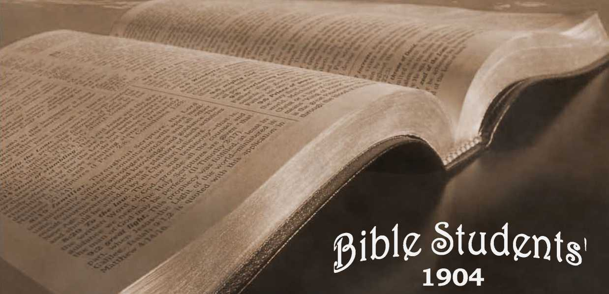
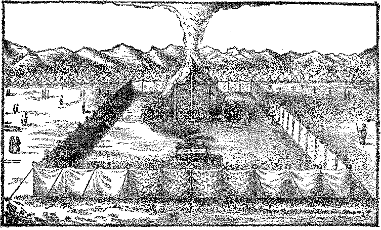
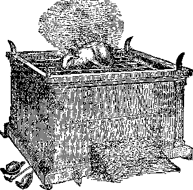
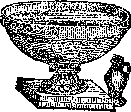
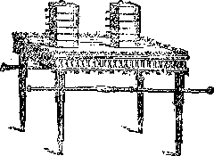
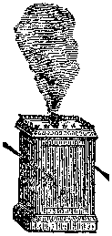
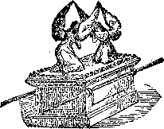
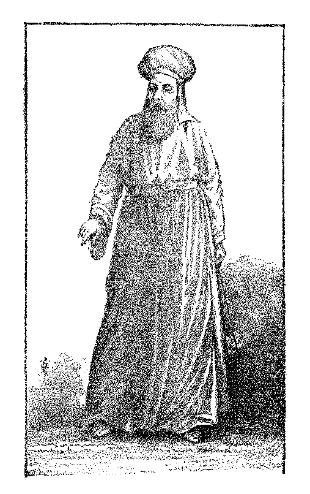
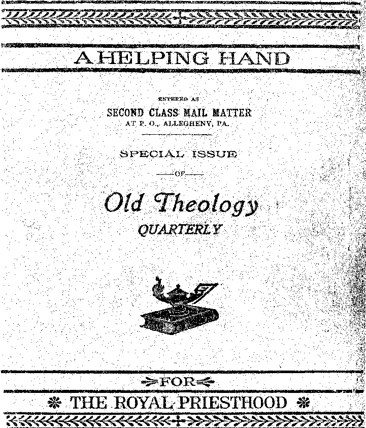

No. 65—The Tabernacle Shadows of the “Better Sacrifices”
THE TABERNACLE IN THE WILDERNESS.
---OE TELUS
Sacrifices,’’
plelpigg pland
---FOR---
T^E p©YALt spplES’Tfl©©©.
WATCH TOWER
BIBLE AND TRACT SOCIETY,
ALLEGHENY, PA., U. S. A.
1907
tlje of I^gs a$d Lord of Lords
IN THE INTEREST OF
HIS CONSECRATED SAINTS,
WAITING FOR THE ADOPTION,
— AND OF —
“ALL THAT IN EVERY PLACE CALL UPON THE LORD,”
“ THE HOUSEHOLD OF FAITH,”
— AND OF —
THE GROANING CREATION, TRAVAILING AND WAITING FOR THE MANIFESTATION OF THE SONS OF GOD,
To make all see what is the fellowship of the mystery which from the beginning of the world hath been hid in God." “ Wherein He hath abounded toward us in all wisdom and prudence, having made known unto us the mystery of His will, according to His good pleasure which He hath purposed in Himself; that in the dispensation of the fulness of the times He might gather together in one all things, under Christ.” .
Eph. 3 : 4, 5, 9 J i : 8-io.
COPYRIGHT 1899.
WATCH TOWER BIBLE & TRACT SOCIETY,
ALLEGHENY, PA.
N. B.—This volume can be supplied also in the German language.
The first edition of this little book was published in 1881, and under the Lord’s blessing seems to have been very helpful to the class for which it was specially intended, —the “ royal priesthood.” Many of this class have confessed that as the finger of the Lord it pointed out to them meanings in the Old Testament types never before appreciated ; and that it has thus guided them in the way of selfsacrifice, by leading them to see the true significance of the Scriptural declarations—“ Present your bodies living sacrifices,” “Fill up that which is behind of the affiidtions of Christ,” “If we suffer with him we shall also reign with him,” “ Let us go to him outside the camp, bearing the reproach with him; ’ ’ besides many other Scripture statements which associate the Lord’s people with himself both “in the sufferings of this present time and the glory to follow. ’ ’ '
The author rejoices that this is true, and prays the divine blessing also upon this new edition, which was made necessary by reason of the eledtro-plates of the former edition being worn, and by the desire to have its general style conform to that of the Millennial Dawn series—for it may properly be considered a supplement and sequel to the fifth volume of that work, kept separate for convenience. Aside from these typographic changes, and the addition of one chapter, and a few alterations in the phraseology to make some points possibly more perspicuous, there are no changes. Indeed, no particular changes seemed possible or desirable.
The understanding of the subjects herein set forth would seem to have been heaven directed, “ taught of God,” at a time when the light was absolutely necessary to the full and clear presentation of the Plan of the Ages. And those who have been blessed by the helps furnished in this little book, and others who shall yet be similarly blessed we trust, may all esteem that they are also “taught of God;” for be it noted that the author has sought to prove every point and every application by the Word of the Lord, and has taught nothing of himself: as he has received of the Lord through his Word and spirit he has presented the same —with the evidences—to whoso has an ear to hear.
The careful student will discern that, the applications of the types herein presented being correct, the entire Plan of the Ages is thereby corroborated—justification, sanctification and glorification for the Church first, and subsequently restitution for whoever wills, of all the families of the earth. To what a glorious gospel, then, is this the key 1
Dear Reader, if the matters herein presented appeal to you as truth at all, they will surely awaken you to energy and zeal to sacrifice earthly interests, to gain the prize of the high calling;—that you may become one of the royal priests soon to be associated with the great “ High Priest of our profession” in the grand work of blessing the groaning creation. And if you get a blessing from these truths, and partake of their spirit, you will want to pass the cup of refreshment on to others who need just such a stimulus to revive their fainting hearts. And if you desire to colabor in this ministry you will find that all arrangements have been perfected by which you can obtain these booklets at a very nominal price—by the dozen or hundred. Every one who receives food at the Lord’s table is honored with the privilege of joining in the service,—as “colaborers together with God.” With Christian love,
Your brother and servant in Christ,
Charles T. Russell.
Allegheny, Pa.,
March, 1881.
CHAPTER I.
THE TYPICAL TABERNACLE.
The Camp.—The Court.—The Tabernacle.—The Brazen Altar.—The Laver.—The Table.—The Lampstand.—The Golden Altar.—The Mercy Seat and Ark.—The Gate.—The First Vail.—The Second Vail.—The Significance of these and their Antitypes.......zi
CHAPTER II.
ISRAELITES, LEVITES AND THE PRIESTHOOD.
What Classes of Mankind were Typified by Israelites, Levites and Priests.—Anointing of the Priests.—The Significance of the High Priest’s “Garments of Glory and Beauty,” Typically Considered.—The Abrahamic Covenant, Law Covenant and New Covenant Foreshadowed.
•......... 25
CHAPTER III.
CONSECRATING THE PRIESTHOOD.
LEVITICUS 8 : 14-33.
Set Apart to God’s Service.—“Be thou Faithful unto Death.”—“Sanctify Yourselves,” and “I will Sanctify you.”—The Bullocks and Rams of Consecration.—The Anointing Oil of Consecration. . . . 39
CHAPTER IV.
THE GREAT “ DAY OF ATONEMENT.”
LEVITICUS l6 : 3-33.
The Order of the Type and Its Antitypical Significations.—The Bullock.
—The Priest.—The Entrance of the Holies with the Blood.—The Incense,the Sweet Odor, and the Stench.—Entering the Most Holy.—The Lord’s Goat.—The Scapegoat.—The Blessing of the People. . . 49
CHAPTER V,
ANOTHER TYPE OE THE ATONEMENT SACRIFICES.
LEVITICUS IX.
Atonement Sacrifices Restated with Varying Details.—Moses and Aaron Entered the Tabernacle, and Came Out Again and Blessed the People. —“Unto them that Look for Him Shall He appear.”—“And After Death the Judgment.”—Divine Acceptance of the Atonement Sacrifice Manifested. ,......... . 79
CHAPTER VI.
SACRIFICES SUBSEQUENT TO THE “DAY OP
ATONEMENT.”'
These Typify Repentances, Vows, Covenants, etc., During the Millennium.—The People’s Burnt-Offerings.—Their Peace-Offerings.—Their Meat Offerings.—Their Trespass-Offerings.—Male and Female DisTINCTIONS TO CEASE, SHOWN IN THE TYPES. ......93
CHAPTER VII.
“ THE ASHES OF A HEIFER SPRINKLING
THE UNCLEAN.”
HEB. 9: 13
Not ons of the Atonement Day Sacrifices.—Not one of the Subsequent Sacrifices for the People.—The Class Typified by this Sacrifice.—The Apostlb Paul The Under-Priest who Witnesses and Testifies Respecting the Antitype.—The Sprinkling of the Ashes for the Cleansing of the People will be During the Millennial Age.—How the Cleansing WILL BE EFFECTED............XO5
CHAPTER VIII.
OTHER SIGNIFICANT TYPES.
The Covet Posts.—The White Curtains.—The Silver Hooks.—The Door Posts of the Holy and the Most Holy.—The Golden Table.—The Golden Candlestick.—Antitypical Priests who See the Deep Things and the Levites who Do Not See Them.—The Golden Altar.—The Ark of the Covenant in the Most Holy.—Its Contents and their Significance.— The Mercy Seat.—The Two Cherubim.—The Priest Unblemished.—The Mystery Hid from Ages. ........ Ir3
TabernacIvE Shadows of
THE BETTER SACRIFICES.
THE TYPICAL TABERNACLE.
The Camp.—The Court.—The Tabernacle.—The Brazen Altar.—The Laver.—The Table.—The Lampstand.—The Golden Altar.—The Mercy Seat and Ark.—The Gate.—The First Vail.—The Second Vail.—The Significance of these and their Antitypes.
THE Tabernacle which God commanded the people of '*■ Israel to construct in the Wilderness of Sin, and in connection with which all their religious services and ceremonies were instituted, was, the Apostle Paul assures us, a shadow of good things to come. (Heb. 8:5; 10:1; Col. 2:17.) In faCt, the whole nation of Israel (as well as its laws and its religious services and ceremonies) was typical. This being true, our understanding of the plan and work of salvation now in progress, as well as their future development, cannot fail to be greatly enlightened by a careful study of those “shadows” which they, for our edification, were caused to repeat year by year continually until the Gospel Age introduced their antitypes—the realities.—1 Pet. 1:11; Heb. 10:1-12.
It is not simply to gain a historical knowledge of the Jewish forms, ceremonies and worship that we come to the 11
investigation of this subject, but that we may be edified by understanding the substance from an examination of the shadow—as God designed in arranging it.
We will fail to attach sufficient weight and importance to the shadow unless we realize how carefully God guided and directed all of its details. First, he took Moses up into the mount and gave him an illustration of the manner in which things were to be made; Secondly, he charged him to be careful of every particular—“See, saith he, that thou make all things according to the pattern shewed, to thee in the mount.” (Heb. 8:5; Exod. 25:40.) So, too, with all the minutise of the service: every jot and tittle had to be exaCtly performed in the type, because it illustrated something greater and more important to come afterward. And in order that these shadows might all be exactly performed, and that the people might not become careless, the usual penalty for any violation was death. For instances see Exod. 28:43; Num. 4:15, 20; 17:13; 2 Sam. 6:6, 7; Lev. 10:1, 2.
Realizing God’s care in making the “shadow” should not only give us confidence in its correctness, that not one jot or tittle of it shall fail until all be fulfilled (Matt. 5:18), but should also awaken in us so great an interest in God’s plan as would lead us to examine closely and search carefully for the meaning of those shadows. And this, with God’s promised blessing, we now propose to do, assured that among those who are truly God’s consecrated ones— his children begotten of his Spirit—“he that seeketh find-eth; and to him that knocketh, it shall be opened. ’ ’
THE TABERNACLE’S CONSTRUCTION.
The direCtions given to Moses for the construction of the Tabernacle may be found in Exod. 25 to 27, and the account of the performance of the work, in Exod. 35 to 40.
Briefly stated, the Tabernacle was a house construdled of a series of boards of shittim {acacia} wood, “overlaid” orplated with gold, set on end into sockets of silver, and firmly fastened together by bars of the same wood, also covered with gold.
This structure was 15 feet wide, 15 feet high, and 45 feet long, and open at the front or east end. It was covered by a large white linen cloth, interwoven with figures of cherubim, in blue, purple and scarlet. The open end, or front of the strudiure, was closed by a curtain of similar material to the covering cloth, called the “Door,” or first vail. Another cloth of the same material, similarly woven with figures of cherubim, called the “Vail” (or second vail), was hung so that it divided the Tabernacle into two apartments. The first or larger apartment, 15 feet wide and 30 feet long, was called the “Holy.”1 The second or rear apartment, 15 feet wide and 15 feet long, was called the “Most Holy.” These two apartments constituted the Tabernacle proper; and a tent was eredted over them for shelter. It was made of a covering of cashmere cloth or goat hair, another of ram skins dyed red, and another of seal skins (mistranslated badger skins).
THE HOLY COURT OR HOLY PLACE.
The Tabernacle was surrounded by a yard, or “Court,” toward the rear of which it stood. This court, 75 feet wide and 150 feet long, was formed by a fence of linen curtains, suspended from silver hooks, set in the tops of wooden posts feet high, which were set in heavy sockets of copper (mistranslated brass), and braced, like the tent which covered the Tabernacle, with cords and pins. This enclose ure was all holy ground, and was therefore called the “Holy Place”—also the “ Court of the Tabernacle.” Its opening, like the door of the Tabernacle, was towards the east, and was called the “ Gate.” This “Gate” was of white linen, interwoven with blue, purple and scarlet.
It will be noticed that the three entrance passages, viz., the “Gate” into the “Court,” the “Door,” into the “Holy,” and the “Vail” into the “Most Holy,” were of the same material and colors. Outside the Tabernacle and its “Court” was the “Camp” of Israel surrounding it on all sides at a respectful distance.
THE BRAZEN ATTAR-.
THE FURNISHMENTS.
The furniture of the “Court” consisted of but two main pieces: the “Brazen Altar” and the “Laver,”—with their respective implements.
Just inside the gate, and immediately in front of it, stood the “Brazen Altar. ” This altar was made of wood and covered with copper, and was T/z feet square and 4*4 feet high. Various utensils belonged to its service—fire pans (called censers), for carrying the fire to the “Incense Altar,” basins to receive the blood, flesh hooks, shovels, etc.
THE LAVER.
Next, between the “Brazen Altar ” and the door of the Tabernacle, was the “Laver.” It was made of polished copper, and was a receptacle for water; at it the priests washed before entering the Tabernacle.
The furniture of the Tabernacle consisted of a “Table,” a “Candlestick” and an “Incense Altar” in the “Holy,” and the “Ark of the Testimony” in the “Most Holy.”
THE TABLE OF SHEW-BREAD.
Within the Tabernacle, in the first apartment, the “Holy,” on the right (north), stood the Table of “Shew-bread”—a wooden table overlaid with gold ; and upon it were placed twelve cakes of unleavened bread in two piles, with frankincense on top of each [pile. (Lev, 24:6, 7.)
THE GOLDEN CANDLESTICK.
This bread was proper for the priests only to eat: it was holy, and was renewed every seventh or Sabbath day.
Opposite the “Table of Shew-bread” stood the “Candlestick,” made of pure gold, beaten work (hammered out), having seven branches, and in each branch a lamp. It was the only light in the “Holy;” for, as we have seen, the natural light was obscured by the walls and curtains, md there were no windows. Its seven lamps were cared for, trimmed, supplied with oil, etc., by the High Priest himself, who at such times was to offer incense at the Golden Altar.
THE
GOLDEN ALTAR,
THE “INCENSE ALTAR.’'*
Further on, close up to the “Vail,” stood a small altar, of wood covered with gold, called the ‘£ Golden Altar ’ ’ or “Incense Altar.” It had no fire upon it except when the . priests brought it in the censers which they set in the top of this “ Golden Altar, ” and then crumbled the incense upon it, causing it to give forth a fragrant smoke or perfume, which filling the “Holy” penetrated also beyond the “second vail” into the Most Holy or Holy of Holies.
THE ARK OF THE TESTIMONY.
Beyond the “Vail,” in the “Most Holy,” there was but one piece of furniture—the “Ark.” It was a redtangular box made of wood overlaid with gold, having a lid or cover of pure gold called the Propitiatory or “Mercy Seat.” Upon it (and of the same piece),were two cherubs of gold— beaten work. Within this “Ark” (under the Propitiatory) were placed the golden bowl of manna, Aaron's rod that budded, and the two tables of the Law. (bleb. 9: 4.) Upon the Propitiatory a supernatural light appeared, shining out between the cherubim, representing the divine presence. This was the only light in the “Most Holy.”
It is noticeable that all the furniture inside the Tabernacle was of gold, or covered with gold, while in the
2 T
“Court” everything was of copper. Wood, which was the base covered with these metals, was used, we believe, to make the articles of lighter weight, more easily portable, than if of solid metal. This was an important consideration when they travelled. The vessels of the Temple, representative of the same things, were of solid metals, (i Kings 7: 47-50.) These two metals, gold and copper, were used, we think, to represent two different natures—copper representing the human nature in its perfection, a little lower than the angelic nature; and gold representing the divine nature, far above angels, principalities and powers. As gold and copper are much alike in their appearance, yet different in quality, so the human nature is an image and likeness of the divine, adapted to earthly conditions. It will be noticed that the arrangement of
THE CAMP, COURT AND TABERNACLE,
thus distinctly separated and differentiated into three general divisions, represent three distinCt classes blessed by the atonement; and the two parts of the Tabernacle represent two conditions of one of these classes.
“The Camp" represented the condition of the world of mankind in sin, needing atonement and desiring it and its blessings, however indistinctly it analyzes its cravings and groanings. These were typified by the “ Camp,” nation of Israel, and were separated from all holy things by the curtain of white linen, which represents to those within a wall of faith, but to those without a wall of unbelief which hindered their view of and access to the holy things within. There was only one gateway to enter the “Holy Place” or “Court;” the type thus testifying that there is but one way of access to God—one “gate”—Jesus. “I am the way. . . . No man cometh unto the Father but by me. ” “I am the door.”—John 14: 6; 10:9.
“ The Court," represented the condition of Justification, entered through faith in Christ, the “gate.” Into this “Court” only Levites (typical of justified believers') were allowed to come. These had access to the “Brazen Altar” and to the “Laver,” and did service in the “ Court,” but had no right as Levites (believers) to go into the Tabernacle; no, nor even to look into it. (Num. 4: 19, 20.) In the “Court” all things were of copper, to indicate that the class admitted there were justified men. The “Court” did not represent the condition of the spiritual class, though the priests, in sacrificing and washing, used it also.
“ The Tabernacle" building, with its two parts, represented the two conditions of all who undergo a change of nature from human to spiritual. The first apartment, the “Holy,” represented the condition of all those who (as Levites—justified believers) have consecrated their human nature to death, that they might become partakers of the divine nature (2 Pet. 1 : 4), having been begotten of the Spirit. Its second apartment, the “Holy of Holies,” beyond the “Vail”—death—represented the condition of the faithful “ overcomers’ ’ who will attain to the divine nature. These, after having completed their consecration in death, will be fully changed, born from the dead by the First Resurrection, to the divine nature and organism. No human being, be he ever so full of faith, be he washed from every sin, and in God’s sight justified freely from all things and reckoned perfect, can have any place or privilege in the spiritual things represented in the interiors of the Tabernacle and Temple. He cannot even look into spiritual things, in the sense of appreciating them. But, during the Gospel age, such are “called” to consecrate and sacrifice their human nature in God’s service, and to inherit instead the spiritual nature—as members of the Body of Christ. “The natural man receiveth not the things of
20
the Spirit . . . neither can he know them, because they are spiritually discerned.”—i Cor. 2 : 14, 12.
The faht that all things in the Tabernacle were made of gold, representative of the divine nature, implies that it represented the condition of such only as are called to the divine nature. Only those of the Levites who were consecrated to the work of sacrificing (the Priests) had access to the Tabernacle; so only those of the household of faith who are consecrated to sacrifice, even unto death, enter the divine conditions represented in the Tabernacle.
The “ Court,” the justified human condition, is entered by faith only; but while we must retain the faith that justifies, we must do more, if we would experience a change of nature and become “ new creatures,” ££partakers of the heavenly calling,” to be “partakers of the divine nature.” Entering the “Holy,” therefore, implies our full consecration to the Lord’s service, our begetting of the spirit and our start in the race for the prize of the divine nature—the terms of which are, faithfulness to our vow, in crucifying the justified flesh, presenting our human wills and bodies living sacrifices to God; no longer to seek human pleasure, honor, praise, etc., but to be dead to these and alive to the heavenly impulses. Yet, into this condition, also, we still come through Christ Jesus our Lord, who not only opened for us the “Gate” of justification through faith in his blood, but who also opened the “Door” (the first vail) into the Tabernacle, “a new way of life,” as spirit beings, through and beyond the second vail, by the sacrifice of our justified flesh.
Hence the two apartments of the Tabernacle, the “Holy” and the “most Holy,” represented two phases or stages of the new life to which we are begotten by the holy spirit.
The “Holy" represented the present condition of those begotten of God through the word of truth. (Jas. 1: 18.)
These, as heavenly minded “new creatures,” though still “in the flesh,” have their real (inner) life and walk with God within the first vail of consecration, and beyond the intellectual sight of the world and the unconsecrated believers. These enjoy the inner light of the “golden candlestick,” while others are in “ outer darkness;” these eat of special spiritual food, represented in the unleavened “bread of presence,” and offer incense at the golden altar, acceptable through Christ Jesus.
The li Most Holy" represented the perfected condition of those new creatures who, faithful unto death, gain the great prize of our high calling through a share in the first resurrection. (Rev. 20 : 6.) Then, beyond both vails—• the fleshly mind and the fleshly body—they will possess glorious spiritual bodies as well as spiritual minds. They will be like their Leader and Forerunner beyond the vail, who, having entered as our Redeemer, hath consecrated for us this new and living way,—or new way of life. —Heb. 10: 20; 1 John 3 : 2.
The spiritual-minded creature in the “ Holy” by faith looks forward through the rent “Vail” into the “Most Holy,” catching glimpses of the glory, honor and immortality beyond the flesh; which hope is as an anchor to the soul, sure and steadfast, entering into that which is beyond the vail.—Heb. 6: 19; 10: 20.
We see, then, that justification by faith, our first step toward holiness, brings us into a condition of “peace with God through our Lord Jesus Christ.” (Rom. 5:1.) When our sins are forgiven, or reckonedly covered with Christ’s righteousness, we are a step nearer to God, but still hitman —in the “Court.” If we would attain the prize of the high calling which is of god in Christ Jesus, and enter through the “Holy” into the “Most Holy,” we must follow
IN THE FOOTSTEPS OF JESUS, our Leader and Head—‘ ‘ the High Priest of our profession —i. e., the High Priest of our order of priesthood—the “royal priesthood”—Heb. 3:1; 1 Pet. 2 : 9 :—
(1) By faith in Christ’s ransom-sacrifice, represented in the Brazen Altar, we enter the “Gate” to the “Court”— the vail of unbelief and sin is passed. This step is one which our Lord Jesus never took, because not being of Adamic stock, but holy, harmless, separate from sinners, he never was outside the Court condition.
(2) Renouncing our justified human wills, and all our human aspirations and hopes, we pass the first vail, or vail of human-mindedness,—counting the human will as dead; henceforth consulting not it, but the will of God only. We now find ourselves as “new creatures" in the “Holy”—in the first of the “Heavenlies” or Holies (Eph. 2:6—Dia-gloth), and begin to be enlightened by the “Golden Candlestick ’ (God’s Word) respedtingspiritual things—“thedeep things of God,” and to be refreshed and strengthened daily with the truth, as represented in the “ shew-bread, ” lawful for only the Priests to eat. (Matt. 12:4.) And thus enlightened and strengthened, we should daily offer up sacrifices at the “Golden Altar,” acceptable to God through Jesus Christ—a sweet perfume to our Father.—1 Pet. 2:5.2
Thus all the saints, all the consecrated, are in a “ heavenly ” or “holy” condition now—“seated [at rest and communion] with Christ in [the first of these] heavenly places,” but not yet entered into the “holiest of all.” No, another vail must first be passed. As the passing of the preceding vail represented the death of the human will, so the passing of the second vail represented the death of the human body; and both are requisite to complete our “ sacrifice." Both fleshly mind and fleshly body must be left behind before we can enter into the “holiest of all ”—perfected as partakers of the divine nature and its spirit conditions: for flesh and blood cannot inherit the Kingdom of God.— 1 Cor. 15:50; compare John 3:5, 8, 13.
With these thoughts before our minds, respecting the three conditions represented by these three places, “Camp,” “Court,” and “Tabernacle,” in our next study we will notice particularly the three classes which come under these conditions; viz., the Unbelieving World, Justified Believers, and the Saints or Consecrated believers, typified respectively by Israelites, Levites and the Priesthood.
24
THE TABERNACLE.
What lone, mysterious abode is this, Surrounded by a wall of spotless white;
By day an altar in the wilderness, A silent watcher on the plain by night?
Who dwells within its consecrated vail, To secular and alien feet denied ?
Who answers when the priest, white-robed and pale, Sprinkles the blood by “ bulls and goats” supplied?
Think you that He of name omnipotent Required for naught these oft-repeated rites, Or gratified mere vanity by scent
Of incense, broidered robes and altar-lights ?
Nay, verily! The curious tapestries,
The vessels wrought of silver, copper, gold,
The ceremonious modes of sacrifice,
All '‘better things” of Gospel times foretold.
And happy he whose reverent gaze discerns
What “ types and shadows ” could but dimly trace: His offering on the golden altar burns,
He solves the mysteries of the “ holy place.”
Upon the blood-stained mercy-seat he reads Atonement sealed by him who went before,
And from the open heavens the Father speeds The riches of his love and grace to outpour.
—R. B. Henninges,
ISRAELITES, LEVITES AND THE PRIESTHOOD.
What Classes ok Mankind were Typified by Israelites, Levites and Priests.—Anointing of the Priests.—The Significance of the High Priest’s" Garments of Glory and Beauty,” Typically Considered.—The Abrahamic Covenant, Law Covenant and New Covenant Foreshadowed.
IT IS important that we get a clear idea, not only of -*■ the structure of the Tabernacle, and of its furniture, and the typical significance of these, but also that we should know something of the adtors therein, and their significance as types.
Israel is used in many instances to typify the Christian Church. For instance, when they left Egyptian bondage, they were a type of God’s children who hear his call to come out from the world and engage in his worship.
The wilderness journey represented the tedious pilgrimage through which many pass, seeking the promised Canaan rest—“Come unto me, and I will give you rest.” As in the type, so in reality, the promised Canaan of rest is not far off, if God’s children had faith enough to go up and at once enter in by faith. God has made abundant provision for them : yet they journey through the Wilderness of Sin, seeking rest and finding none, because they lack faith in God’s promises. Some wander thus a long time; and some never enter the Canaan rest because of unbelief. But while Israel, according to the flesh, is thus and in other ways used to typify Spiritual Israel, yet as we are now examining it, in its relation to the Tabernacle, it is a totally different
type. Here Israel unquestionably typified the whole world of mankind. The sin-offering, sacrifice, atonement, etc., made typically for them (and them only), were typical of the “better sacrifices” and atonement, made on behalf of the whole world; for thus vve read, “He is a propitiation for our sins, and not for ours only, but also for the sins of the whole world.”—i John 2:2; Heb. 9 : 23.
In a word, Israel, as well as the Tabernacle, Priests, Levites and sacrifices, was a type. And what was there done in symbol with and for Israel is, since the first advent of Christ, being carried out on a higher plane, and on a larger scale, the latter being the reality, of which that was the type or shadow.
As Israel typified the world, so the tribe of Levites typified the “household of faith,” or all believers in Jesus and his ransom. The Priesthood, one body under one chief or High Priest, was typical of the “little flock,” who, with their “Head” or High Priest, are a royal priesthood, who, after the present time of sacrificing, are to be kings and priests unto God, and to reign on the earth. (Rev. 5 :io.) Thus viewed, we see Jesus the High Priest, not a priest of the Aaronic order, which was but the type of a greater and grander profession or order—the Head of the real priesthood of which others were but figures. (Heb. 3:1; 4:14.) The Aaronic priesthood typified chiefly the humiliation and sufferings of Christ, and less his future glory,—Melchisedec being the type of the Christ as a kingly or royal pristhood.
But before the under-priests, the members of the body of Christ, the royal priesthood, will be united to their Head, and begin their reign, they must “ suffer with him," sharing in the antitypical sacrifices, as we shall shortly see.— 2 Tim. 2:12.
The Apostle Peter shows who were typified by the Aaronic priests, when, addressing those who were sanctified, he says: “Phare . . . an holy priesthood to offer up sacrifices acceptable to God by Jesus Christ.” “Ye are ... a royal priesthood.” (1 Pet. 1:2; 2:5,9.) They are all ministers (servants} of the truth, though not all preachers and Doctors of Divinity: and each must do his share at self-sacrifice ere he will be accounted worthy to be a joint-heir with Christ. Only to those who suffer with him is there a promise to reign with him.—Rom. 8:17.
That the head or Chief Priest of this priesthood, this “little flock,” is our Lord Jesus, is repeatedly mentioned by the Apostles. We give but one quotation : “Holy brethren [“the Royal Priesthood”], partakers of the heavenly calling, consider the apostle and High Priest of our profession [our order of priests, to be], Christ Jesus.”—Heb.3:i.
As we now pass to the consideration of the inauguration of the typical priesthood, we notice that the tribe of the Levites (typical of all the justified believers) existed before the priesthood was instituted. So in the antitype the .“ Royal Priesthood'" began with the anointing of Jesus, the High Priest (at baptism, Luke 3:22; Adts 10:38); but believers, justified by faith in Christ, had lived long before that. For instance, Abraham believed God, and was justi-fiedYy his faith. (Rom. 4: 2, 3.) Though even the type had not yet come in his day, Abraham, as a justified believer, was a member of the “household of faith,” typified by the Levites. But none of the “Royal Priesthood” were selected until after the Chief or High Priest of this order was first initiated and installed in office. Since then the initiation and installment of the under-priests has been the special work of this Christian dispensation or Gospel Age. Thus the priests, now consecrating, being installed and offering themselves as sacrifices, are being prepared as God’s instruments for the royalty of the Kingdom, and thus for the blessing of all the families of the earth.
THE PRIESTHOOD.
It will be well to notice that in every ceremony relating to the ordination and work of the priesthood the chief priest was first: and so in the antitypical priesthood, Jesus was the first— the Leader, Captain, Forerunner—teaching clearly that none preceded him. Hence we see that none of the patriarchs or prophets are of the “little flock,” the “royal priesthood,” otherwise called “the Bride,” “the Lamb’s wife.” Though they will be greatly blessed as the Lord’s servants, their service will not be so grandly high as that of the priests, nor their honor so great; nevertheless, as represented in the Levites, their future work and honor will evidently be great.
“The narrow way to life ” (immortality) was not opened up until Jesus came. He was the first to walk in it. He “brought life and immortality to light.'1 ’ (2 Tim. 1 : 10.) And though all faithful believers (Levites) will become possessors of everlasting life, and the world (represented in the “Camp of Israel”) also, if they will accept it during the Millennial Age, yet only the priesthood, who overcome and follow their Leader in the narrow way to life—sacrificing human interests—thus seeking glory, honor and immortality (Rom. 2:7), will ever become the possessors of that unlimited degree of life called immortality, originally possessed only by Jehovah God, and by our Lord Jesus Christ since his resurrection.—See The Plan of the Ages, Chapters x. and xi.
THE ANOINTING.
Under the law, the anointing was the ceremony by which the priests were installed in their service. They were anointed to their office with a peculiar ointment, called the “Holy Anointing Oil,” used upon none but the priests, and unlawful for any one else to have or to make. (Exod. 30: 25-33,38.) This oil typified the Holy Spirit of adoption whereby we, the real “royal priesthood,” are sealed as sons of God. Only the consecrated ones, the priests, are ever to be thus anointed.
Aaron, the typical High Priest, represented Jesus, the Head, and the Church as members of the body,—the great antitypical High Priest. Being but a sinful man, like others, Aaron had to be washed in order fitly to represent the purity of the antitype, Jesus, who knew no sin, and his Church, cleansed through his precious blood, and the washing of water by the Word.—Eph.. 5 : 26.
After being washed, Aaron was clothed with the holy garments of “glory and beauty” (Exod. 28), and lastly the anointing oil was poured on his head. (Exod. 29:7.) Each article of this glorious apparel was typical of qualities and powers of the Great Deliverer—Head and Body—as Jehovah discerned them, looking down into the future to the time for “the manifestation of the Sons of God,” and the fulfilment in them of his promises.
THE HIGH PRIEST IN GARMENTS OF TYPICAL “GLORY AND beauty.”
“And these are the garments-—a breastplate and an ephod, and an upper robe, and a broidered coat, a mitre and a girdle.”—Exod. 28: 4.
The white linen “coat” represented the High Priest’s purity, while its embroidery showed the outgrowth of that pure character in works of grace.
The “mitre,” a strip of fine white linen (typical of righteousness), worn around the forehead, to which the golden plate, or “crown,” was fastened with a blue lacer, showed that the crown was righteously his.
Upon the golden plate was inscribed “ Holiness to the Lord, ’ ’ thus proclaiming: This High Priest is entirely devoted to the accomplishment of Jehovah’s purposes. The golden crown also proclaimed his royalty : Christ is to be “a. priest upon his throne’ ’—“a priest forever after the order of Melchisedec.”—Zech. 6: 13; Psa. 110:4; Heb. 7:17.
The “Linen Girdle” indicated a righteous servant: linen—righteousness, girdle—servitude.
The “Upper Robe,” of blue, represented his faithfulness. The fringe of it was made of golden bells and pomegranates. The pomegranate, being a choice fruit, showed that the faithful performance of the Redeemer’s work of sacrifice had borne rich fruit—the redemption of the forfeited life of the human race. The golden bells signified that when our High Priest appears in glory and beauty, the fruit of sacrificial work was made manifest to all—-proclaimed to all the world, as in the type the bells proclaimed it to all Israel. This is indicated by the close proximity: the bells drawing attention to the fruit.
The “Ephod” was made of cloth of purple, blue, scarlet, white and gold threads, skilfully and beautifully interwoven. It was of two parts, one hanging in front and the other over the back. These two parts were fastened together by two gold clasps which rested on the shoulders. The ephod typified the two great covenants—the Abrahamic Covenant represented by the front part, and the New Covenant represented by the back, both of which are thus shown to be dependent on our High Priest. Both of these covenants are laid on him: if he fails to support them, fails to carry out their terms and conditions, they fall to the ground—fail. But, thank God, these covenants are united and firmly clasped on him by the gold clasps (divine power), as well as bound to him by the “curious girdle”—a cord made of the same material as the ephod.
THE HIGH PRIEST
IN ROBES TYPICAL OF CHRIST’S COMING GLORY.
This “Curious Girdle’’ seems to say, This is a. servant, and as this is the girdle of the Ephod it tells us that this one is “The Messenger [servant] of the Covenant whom ye delight in.”—Mal. 3:1.
One part of the Ephod which represents the New Covenant was guaranteed at Calvary: for was not our Lord’s death “the blood of the New Covenant” in which his members share ?—Matt. 26:28; I Cor. 10:16.
The other part is incomplete as yet except as the heavenly Father sees its fulfilment in the future: for the Abrahamic Covenant promised the development of the Seed of Abraham, through whom the New Covenant will bless all the people, and this Seed is not yet complete. True, our Lord Jesus is the Seed, yet God foresaw and has foretold the larger seed spiritual, which will include the body, the Church with the Head. (Gal. 3:16, 29.) And the Apostle points out that an earthly seed of Abraham will also share the work of blessing the world, yet spiritual Israel is the true seed: as it is written, “The son of the bond woman shall not be heir with the son of the free woman.”—Gal. 4:22-31.
Concerning the natural seed of Abraham, and as proving that they will not be members of the priest who will do the blessing, the Apostle says: “As concerning the Gospel [the spiritual part of the covenant] they [the literal seed] are enemies for your sakes ; but as touching the election they are [still] beloved for the fathers’ sakes. For the gifts and callings of God are not things he will repent of. For this is my covenant to them,—There shall come out of Zion [the spiritual Church] the deliverer [this great High Priest, the servant of the Covenant—Jesus, the Head, and the “little flock,” his body], and shall turn away ungodliness from Jacob.” They are to be first blessed by the spiritual or true Seed and may later become associate laborers.—Rom. 11:26-29.
So, then, after the body of Christ completes the spiritual “Seed,” that additional promise to Abraham respecting an earthly seed must have a fulfilment: the fleshly seed must become great “as the sand by the sea shore,”—the heavenly Seed being likened to “the stars of heaven.” (Gen. 22: 17.) They must first be turned to righteousness and truth; and they will then become an agency through which the spiritual seed will operate in the promised blessing of all mankind with truth and grace.
The scarlet, blue, purple, etc., which composed the ephod, indicated the conditions of the two covenants. The scarlet shows how God provides redemption from the Adamic curse through the blood of the ransom. The white linen indicates the restoration of man to his original purity. The blue vouchsafes to him the aid, the ability, faithfully to maintain his righteous character. The purple proclaims the royal power of the Kingdom cooperating. All of these blessings woven together are made sure by the divine power of the anointed Priest, represented in the interwoven thread of gold. Thus Jehovah has laid both of these covenants, as they relate to men, upon one who is both mighty and willing to execute these glorious covenanted blessings—“in due time. ’ ’
“The Breastplate of Judgment”—was placed on the front of the ephod. It was suspended by a gold chain from the clasps on the shoulder, and was fastened to the ephod by the lacer, through golden rings—this fastening being so concealed underneath that to the casual observer it might appear to be a part of the ephod. (Exod. 28 : 26-28.) This breastplate beautifully represented the Law: It was not a part of the Abrahamic covenant (ephod) but “it was added ” to it. (Gal. 3: 19.) As the Israelite regarded them (not seeing the hidden connection), the covenant to Abraham and “the law, which was 430 years after,” were all one. But Paul shows us that there are two parts—two seeds—to this covenant, the spiritual and the natural, and that the covenant and the law were distinct, “to the end that the promise might be sure to all the seed; not to that only which is of the Law, but to that also which is of the Faith." —Rom. 4:16.
This Law emblem (the breastplate) was one of the most beautiful of the High Priest’s garments. It was made of the same materials as the ephod. It had in it, set in gold, twelve precious jewels, in which were engraved the names of the twelve tribes. It was bound on his heart indicating that it was precious to him. As a “breastplate of righteousness ” it covered his heart. That which condemned all imperfection was his pleasure—“I delight to do thy will, O my God: yea, thy Law is within my heart. ’ ’—Psa. 40:8.
This breastplate was two spans long and one span wide, folded in the middle, i. e., a span long and a span wide when doubled. The size, a span, indicated that the law of God is the full measure of a perfect man's ability. The man Christ Jesus, being perfect, was the only one who ever kept the perfect Law of God inviolate, while those who compose the “little flock,” his body, have his righteousness imputed to them, and hence may truly say, “The righteousness of the Law is fulfilled in us. ’ ’
The fact that it was double and that the parts were of the same size and measure, represented the letter and the spirit of the law. The front part contained the jewels, and was hung by the gold chain to the gold clasps of the ephod. The under part was fastened to the ephod. This under half, tied to the ephod (covenant), seems to represent the law in letter, as presented to fleshly Israel. The front part seems to illustrate the spirit of the law fulfilled in us, “who walk not after the flesh, but after the spirit.” (Rom. 8:4.) The two are really one when rightly seen, yet the front part, only, bears the precious jewels.
Pure gold being a symbol of divine things, the depend* ence of this part of the Law by a gold chain, from the gold clasps, seems to teach that the Law is divine; and we know, also, that it is by divine aid that we are enabled to walk— not after the flesh but after the spirit. It is this phase of the Law which bears the “jewels,” set in gold, representative of the true Israel, the Lord’s “little flock.” “They shall be mine, saith the Lord of hosts, in that day when I make up my jewels.” (Mal. 3:17.) Thus embedded in gold (the divine nature) and upheld by the golden chain of divine promises, what wonder that “the righteousness of the law is fulfilled in us ! ”—Rom. 8:1, 4.
As Aaron stood there clothed in those beautiful robes so typically significant, and was anointed with the holy oil, his head represented Jesus, the Head of the Priesthood, while his body represented the Church, complete in Christ. How impressive and significant a type of the world’s High Priest, undefiled, and clothed with power and authority to fulfil Jehovah’s covenants 1
THE UNDER PRIESTS--“THE BODY.”
We see the body, or members of the High Priest, again individually typified by the under-priests, who each wore a “bonnet,” covering his own head, to indicate that he was not the head of the Priesthood, but merely a member of the body. God gave Jesus “to be the head over all things to the Church, which is his body.” (Eph. 1: 22, 23.) It is for this reason that Paul insists that a woman’s head should be covered, as indicating that she is not the head, the husband and wife being typical of Jesus and his Bride—the the Church of the First-born.
The under-priests were robed in linen garments and wore girdles. Their robes represented the righteousness of Jesus,
Israelites, Levites and the Priesthood. 37 imputed to us, and their girdles represent us as servants of righteousness. The High Priest wore very similar garments during the time of sacrificing (the Day of Atonement) and put on the glorious garments after making atonement.
THE ANOINTING OF THE PRIEST.
As Aaron had the holy oil poured upon his head, so our Head, the Lord Jesus, was anointed with the antitypical oil—the Holy Spirit—when he was thirty years of age, on the banks of Jordan, at the time of his consecration. There he was “anointed with the oil of gladness above his fellows’ ’ —as head over all his joint-heirs. A measure of the spirit is given to every member who thus consecrates; but Jehovah gave “not the Spirit by measure unto him.” (John 3: 34.) John saw and bore record that our High Priest was thus anointed, and Peter adds his testimony, “ How God anointed Jesus of Nazareth with the holy spirit and with power.”—John 1:32; Luke 4:1; Acts 10: 38.
The anointing oil was poured only upon the head. The under-priests were not anointed individually. They were recognized as members of the High Priest’s body, and received their anointing only in him as their head. Hence also the antitypical priests are merely partakers of the spirit of Christ, and only those who are in Christ Jesus are partakers of the anointing which seals all those who will be recognized as the heirs of God’s promises, and joint-heirs with Jesus Christ their Lord.—Eph. 1:13, 14; 4: 30.
The oil “ran down. . . to the skirts of his[the High Priest’s] garments” (Psa. 133:2), thus representing how all the members of Christ’s body are to be partakers of the same anointing after their Head. “The anointing which ye have received of him abideth in you.” (1 John 2:27.) This oil began to reach the body on the day of Pentecost, and flowed on down
through this Gospel age, anointing all who are truly baptized into Christ, constituting them, with their Head, kings and priests unto God, to reign a thousand years.—Rev. 20:6.
We thus see that Aaron, robed and anointed, represented the entire Christ—the complete Seed of Abraham, in which God is about to bless all the families of the earth. But let us not forget that we have been viewing the Great Deliverer from God’s standpoint, and with him looking down to the time of his manifestation—the dawn of the Millennial Day —when all the members shall have come into the Body, and when the “holy oil” shall have run down “to the skirts of his garments,” anointing every member. (Lev. 10: 7.) Then he will begin the work of blessing mankind. For the glorious reign of this Kingly Priest we constantly pray, —“Thy Kingdom come, thy will be done on earth.”
CONSECRATING THE PRIESTHOOD.
LEVITICUS 8 : 14-33.
Set Apart to God’s Service.—“Be thou Faithful unto Death.”—“Sanctify Yourselves,” and “I will Sanctify you.”—The Bullocks and Rams of Consecration.—The Anointing Oil of Consecration.
TH E consecration of the Priesthood was typical of the consecration of the human nature of the Lord Jesus and his body, the Church, to the will of Jehovah—the obedience of Jesus even unto death, and the obedience of the members of his body suffering for righteousness’ sake “even unto death’ ’ with him; The whole body, represented by Aaron’s sons (as well as the Head, represented personally by Aaron himself), is, by the antitypical sacrifices, being made during the Gospel age, consecrated for their future work as kings and priests, to restore and rule over and bless mankind. This consecration signifies the giving up of their all to the will of God in his service. But the extremity of the sacrificers becomes Jehovah’s opportunity ; when these priests have consecrated all they have, all they are, and all they hope for, as human beings, devoting or sacrificing these to destruction, thus becoming joint-sacrificers with Jesus their Redeemer, then, in accepting their sacrifices, Jehovah begets these to a new nature— the spiritual nature. And not only so, but as a reward for 39
faithfulness he promises to bestow the highest order of spiritual existence—the divine nature: and at once they are reckonedly owned as spiritual sons of God.—Gal. 4: 4-7; 2 Pet. 1:4.
“be thou faithful unto death.”
That some who consecrate to sacrifice, and thus join the “royal priesthood,” will not reach the future royal service is also shown in these types, as well as expressly declared in the New Testament. One class will be “saved so as by fire,” “coming up through great tribulation,” but missing the prize for which they started out in consecration, because not sufficiently appreciative of their privilege of sacrificing as priests,—not sufficiently zealous to “suffer with him,” the High Priest. These we will consider particularly later on, when examining the sacrifices of the Atonement Day.
Another class of those who consecrate as priests, which will not gain the royal blessings promised to these priests, will be destroyed in the Second Death. These, clearly brought to our notice by the New Testament (Heb. 6 : 4-6; 10 : 28-31; 1 John 5 :16), are pictured also in these types or shadows of the Tabernacle service.
i Aaron’s four sons at first represented the under priest hood, but two of these were destroyed typically—corresponding to the two classes above described, both of which fail, as respedts the royal priesthood; one of them suffering the Second Death, the other saved from it only “so as by fire ”—tribulation, purgation. And as Aaron and the two remaining sons were forbidden to make lamentation for their brethren who were thus cut off, this signifies that all the faithful of the priests will recognize the justice of the divine decisions, and will bow to them in humble submission, saying, “ Just and true are thy ways, thou King of saints.” Indeed, it brings a blessing to the faithful, leading them to greater zeal, saying, “Let us fear lest a promise being left us of entering into his rest any of us should seem to come short of it.”—Lev. 10: 1-7; Rev. 15:3; Heb. 4: 1.
“SANCTIFY YOURSELVES”—AND—“l WILL SANCTIFY YOU.’’
The invitation to the justified believer to consecrate, sandtify, or set apart himself to the divine service, is an invitation to sacrifice earthly interests and rights: and the promise on God’s part is that such sacrifices will be holy and acceptable through the merit of our Redeemer, and that in return he will accept us as new creatures, begetting us to the new nature by the holy spirit of the truth. Thus God sanctifies or sets apart such as are reckon edly holy new creatures.
The typical consecration service performed upon the typical priests shows the two parts of the consecration —our part in surrendering the human nature and its rights, and God’s part in accepting our sacrifice, and setting us apart and recognizing us as new creatures. The new spiritual nature was represented in Aaron and his sons; the earthly nature sacrificed was represented in the bullock and rams offered on the altar.—Lev. 8 : 14-33.
The bullock for the sin-offering was brought, “and Aaron and his sons laid their hands upon the head” of it, thus saying, This sacrifice represents us. From that moment, all that happened to the bullock represented what was to be done to Jesus and to his body, the Church, as human beings. The bullock was delivered up to the “Law” (represented by Moses), to meet its demands against Israel, typical of mankind in general. To meet the demands of the Law it had to be slain—“And Moses slew it.” He then applied the blood to the horns of the altar. The “finger” of the 11 Law” thus pointed out that the altar of earthly-sacrifices was acceptable to God by reason of the shed blood, (the life given), and that all who realize the power of the altar (horns are symbols of power) must first recognize the blood which sanctifies it. The blood poured at the base of the altar showed that through the blood of the sacrifice (life given) even the earth was purchased back from the curse. “Unto the redemption of the purchased possession.”—See Eph. 1:14.
And Moses took the bullock, his hide, flesh, etc., and burnt them with fire without the “Camp.” (Verse 17.) Thus the humanity of the Christ complete—Head and body —is made “a sin-offering,” suffering the destruction to which the world was doomed, and from which, by this sacrifice, it will ultimately be delivered—the merit being in the sacrifice of our Lord Jesus, we, his “brethren,” being privileged to fill, up a measure of his sufferings, as “ members of his body.” But while the humanity of the royal priesthood is destroyed, as a vile thing in the eyes of the world, as represented by the burning of the bullock without the “Camp,” God accepts the heart devotion which prompts the sacrifice, which says, “Lo, I come to do thy will, O God.” “I delight to do thy will, O my God.” This was represented by the offering on the altar of the fat and parts of the inward life-producing organism, as a “sweet savor” unto the Lord.—Col. 1:24.
Other features of the same consecration were shown by the two rams mentioned in verses 18 and 22. The first mentioned was the ram for the burnt-offering. Aaron and his sons laid their hands upon its head, thus indicating that it represented them. It was killed; its blood was sprinkled upon the altar; and Moses “cut the ram into pieces, and washed the inwards and legs in water,” and “burnt the
A PRIEST—IN LINEN GARMENTS
head and the pieces and the fat. ’ ’ Thus during the entire Gospel age Jesus and his body, the Church, are being presented, member by member, before God on the altar, yet all are counted together as one sacrifice. The Head was laid on the altar first, and since then all who are “dead with him,” and cleansed, as in the type, by the washing of water—through the Word—are reckoned as laid with the Head upon the same altar. The burning of the offering on the altar shows how God accepts the sacrifice, as “a sweet smelling savor. ’ ’
The second ram, “the ram of consecration,” showed what effect the sacrifice will have upon us, as the first showed how God receives our sacrifice. Aaron and his sons laid their hands upon the head of the ram of consecration, showing thus that it represented them. And Moses slew it and took its blood (consecrated life) and put it upon each separately, thus showing that our consecration is an individual work. And he put it upon the tip of the right ear, and upon the thumb of the right hand, and upon the great toe of the right foot. Thus by our consecration we are enabled to have the “ hearing of faith f and to appreciate God’s promises as none but the consecrated can. Our hands are consecrated, so that whatsoever our hands find to do we do it with our might as unto the Lord. Our feet are consecrated, so that henceforth we “walk not as other Gentiles” but ‘•‘walk in newness of life,” “walk by faith, ” “ walk in the spirit,” “walk in the light,” and even “as we received Christ, so walk in him.”—Verses 23, 24.
The choice portions of the ram, its “inwards” and “fat,” represented our heart sentiments, our best powers. These were taken in the hands of the priests and “waved' ’—passed to and fro before the Lord—representing the faht that a consecrated offering is not given to the Lord for a moment, a day or a year, but that we consecrate to continually keep our affections and powers uplifted, never ceasing until accepted of him as having finished our course. And Moses took the wave-offering off their hands (the priests did not lay it down), God’s acceptance being shown by fire. So we, the “royal priests,” may not lay down or cease to offer all our powers in God’s service while we have them, nor until all are consumed in his service, until God shall say, it is enough—come up higher. When the love (“fat”) of our inmost being is laid upon the altar, it helps to increase the fire of God’s acceptance. The mope love there is connected with our consecration to God, the more quickly will it consume our offering.
Upon this “wave-offering,” while in their hands, were laid three cakes from a basketful. This offering was laid by Moses upon the hands of both the High Priest and the under priests.
The first, an unleavened cake, represented the aCtual purity of Jesus as a man, and the imputed purity of the Church as men, as attested by the Law (Moses)—-justification—for “the righteousness of the Law is fulfilled in us '' so long as we are accepted members of his body. (Rom. 8:4.) The second unleavened cake, mingled with oil, represented the indwelling spirit of God — sanctification. The third, a wafer, represented our hope and faith in the exceeding precious promises of glory, honor and immortality.
Without these elements it is impossible for our consecration to be complete, and hence acceptable; viz., Justification (purity), Sanctification by the Spirit, through the belief of the truth, and faith in the promised Glorification.
The anointing oil mingled with the blood of consecration was sprinkled over them (verse 30^, teaching that our consecration is accepted only because we are justified by the precious blood of our Redeemer; thus we arg told that we are “accepted in the Beloved ”—only.—Ephesians 1:6.
The boiling of the flesh of consecration (verse 31) was no part of the sacrifice: it was merely the preparing of the portion which was to be eaten. It was all to be disposed of (verse 32), showing that we are to be completely and entirely consecrated, and none of our time and power should be wasted.
The seven days of consecration (verses 33, 35) showed again that we are consecrated to God’s service, not for a part of our time only, but for all of it. Seven, in Scripture, is a complete number, and signifies all or the whole of whatever it applies to. (“Seven seals,” “seven trumpets,” “seven plagues,” etc.) Verse 36 shows the completion of the work of consecration.
There never was a time when it was more necessary than it is now that all who are consecrated as priests should see to it that we “be dead with him,” and our every ability waved before God, that he may accept and make use of our talents to his glory. Especially is this a matter of interest to those who understand the Scriptures to teach that very soon all the members of the body will be accepted with the Head, a sweet savor to God; and that the work of self-sacrifice being then finished, the glorious work of blessing mankind and fulfilling the Covenant of God will begin.
The antitypical consecrating of the antitypical priests is confined to the present Gospel age. It has progressed steadily since our Lord and Forerunner “ offered up himself ’ ’—and will be complete before this age has fully ended. And if we fail to be among the priests now, during the time of consecration, we cannot be of them when they begin their service for the people in the Kingdom, when these same priests (now despised of men, but a “sweet savor to God’ ) will have the title of King added, and will, with their Head, Jesus, rule and bless all nations. (Rev. 20 : 6.) Do we earnestly desire to be among those who will sing to the praise of our great High Priest, “ Thou hast made us unto our God Kings and Priests, and we shall reign on the earth?” If so we'will be fully consecrated now, for it is only “If we suffer with him ” that “we shall also reign with him.”—2 Tim 2:12.
PRAYER OF THE UNDER-PRIESTS.
Vidtorious High Priest! No more in garments stained
Shalt thou for sacrifice draw near;
No more with sin’s dread penalty shalt thou be pained.
The great redemption-price is paid, the glory-heights attained, And soon to bless shalt thou appear!
All-glorious High Priest! All power in heaven and earth, All grace and love dost thou possess !
As rightful King of kings and Lord of lords, stand forth!
While joyful trumps proclaim thy righteous name and worth, And prostrate hosts thy praise confess.
* * *
O merciful High Priest! O tender Advocate,
The penitent’s unfailing Friend,
Still touched by feeling for our griefs and low estate!
The future work of grace for all anticipate,
And now, on us, thy blessing send ! .
—B. B. Henninges.
THE GREAT “DAY OF ATONEMENT.”
LEVITICUS 16:3-33.
The Order of the Type and Its Antitypical Significations.—The Bullock.
—The Priest.—The Entrance of the Holies with the Blood.—The Incense, the Sweet Odor, and the Stench.—Entering the Most Holy.— The Lord’s Goat.—The Scapegoat.—The Blessing of the People.
THE Day of Atonement as a type should be considered -*■ as separate from and yet a part ®f and related to other Tabernacle types. Indeed, these types are each separate pictures, so to speak; each has its own subject and teaches its own lessons, and yet all are in agreement—parts of one gallery, and harmonious as the work of one great Artist. In all of them we are to look first for the Head and then for his body, the under priests, the Church.
To understand the significance of the Day of Atonement and its work, we must realize that while our Lord Jesus personally is the Chief Priest to the under priesthood, the Gospel Church, “his body,” yet in the more full and complete sense he is the Head and we are the members of the body of the world’s High Priest. Just so Aaron was chief over his under priesthood, while really in its general and proper sense, and representing the under priests, he was ordained to minister as High Priest “for all the people'' ’ of Israel,—the typical representatives of all humanity, desirous of having atonement made for their sins and to return to divine favor and obedience.
4 t 49
As the consecrating of the antitypical priesthood includes all the members of the body, and requires all of the Gospel age to complete it, so also with the sin-offering, or the sacrifice of atonement: it commenced with the Head, and we, the members of his body, fill up the measure of the sufferings of Christ which are behind. And these sufferings require all of the Gospel age to complete them.—i Pet. 4:13; Rom. 8:17; 2 Cor. 1:7; 4:10; Phil. 3:10; Col. 1:24j 2 Tim. 2:12; 1 Pet. 5 :i, 10.
The “Day of Atonement,” which in the type was but a twenty-four hour day, we see then in antitype to be the entire Gospel age. And with its close the sacrificing ceases, the glory and blessing commence, and the great High Priest of the world (Jesus and his bride, made one, Head and members complete) will stand forth crowned a King and Priest after the Melchisedek order, a King of Peace—a Priest up<m his throne.—Heb. 5: 10.
There he will stand before the world (manifest, recognized, but unseen by natural sight), not only as King and Priest, but also as the great Prophet—“A Prophet shall the Lord your God raise up unto you of your brethren, like unto me [Moses]; . . . and it shall come to pass that every soul which will not hear that prophet shall be destroyed from among the people.” When, during the Millennium, under the government and teaching of this great Prophet, Priest and King, mankind is brought to perfect knowledge and ability, perfedt obedience will be required, and all who will not render it will be cut off from life without further hope—the second death.—Adds 3:22, 23.
In the end of the Jewish age Jesus offered himself individually to Israel as prophet, priest and king, typical or illustrative of the offering of the whole body, the complete and glorified Christ, to the whole world. As prophet he taught them; as priest “he offered up himself ” (Heb. 7:27); and as king he rode into their city at the close of his ministry. But they did not receive him in any of these offices. During the Gospel age his Church or body has acknowledged him as ‘ ‘a teacher sent from God ’ ’—the great Prophet; as the “High Priest of our profession;” and as the rightful King. The Word of God teaches, however, that it is not by the Church only that he is to be accepted, but that he (together with his body, the Church) will be the Prophet for all the people, the Priest for all the people, and the King over li all peoples, nations and tongues“Lord of all,” Priest of all, and Prophet or teacher of all.
In the consecration of the typical priests we saw Aaron and his sons representing our Lord Jesus and his body as “new creatures,” and a bullock representing their humanity; but in the type now to be considered we find Aaron alone representing the entire Anointed One (Head and body), and two different sacrifices, a bullock and a goat, are here used to represent the separateness, yet similarity in suffering, of the body and its head, as the “sin-offering.’’
THE FIRST ATONEMENT DAY SACRIFICE.
THE BULLOCK.
The bullock represented Jesus at the age of thirty years —the perfect man who gave himself and died on our behalf. The High Priest, as we have already seen, represented the “new” nature , of Jesus, the anointed Head and all the members of his body foreknown of God. The distinction which is here made between the human and 11 new creature” should be clearly understood and remembered.3 “The man Christ Jesus who gave himself” at thirty years of age, was he who previously was rich (of a higher nature), but who for our sakes became poor; that is, became a man, that he might give the only possible ransom for men—a perfect man’s life.—i Cor. 15:21.
Since the penalty of man’s sin was death, it was necessary that our Redeemer become a man, be “ made flesh," otherwise he could not redeem mankind. A man had sinned, and the penalty was death ; and if our Lord would pay the penalty it was essential that he should be of the same nature (but undefiled, separate from sin and from the race of sinners), and die as Adam’s substitute, else mankind could never be liberated from death. To do this the man Jesus made sacrifice “of all that he had"—glory as a perfect man, honor as a perfect man could claim it, and, finally, life as a perfect man. And this was all that he had, (except God’s promise of a new nature, and the hope which that promise generated); for he had exchanged his spiritual being or existence for the human, which he .made “ a sin-offering, ’ ’ and which was typified by the Atonement Day bullock.—John 1:14; Isa. 53 : 10.
But since “ the man Christ Jesus” gave himself as our ransom-price, it follows that he cannot be restored to manhood. If he were to take back the ransom-price, we, the redeemed, would again relapse under the condemnation of death. But, thanks be to God, his sacrifice remains forever, that we may be forever free from Adamic guilt and its death penalty. If, then, the Father would ever confer ' upon Jesus any honor, glory or life as a reward for his obedience even unto death, it must be a glory, honor and life on some other plane of being than the human, in order not to interfere with our ransom-price.
Such was the promise of Jehovah to Jesus, viz., that he would highly exalt him above the human plane, and above his prehuman condition; above all angels, principalities and powers, to his own right hand (condition of chief favor, next to Jehovah) and make him a partaker of immortality —the divine nature. For these and other joys set before him, Jesus “endured the cross, despising the shame, and is set down at the right hand of the majesty on high.”— Heb. 12:2; Phil. 2:9; Heb. 1:3, 4.
The new nature which our Lord received instead of the human nature, and as a reward for its sacrifice, is what is here typified by the Priest. While it is true that the sacrifice of the human was not finished until the cross, and that the reward, the divine nature, was not fully received until the resurrection, three days later, yet, in God’s reckoning —and as shown in this type—the death of Jesus (the bullock) was reckoned as complete when Jesus presented himself a living sacrifice, symbolizing his death in baptism. There he reckoned himself dead—dead to all human aims, to hopes of human glory, honor or life,—in the same sense that we, his followers, are exhorted to reckon ourselves dead indeed to the world, but alive as new creatures unto God. —Rom. 6:11.
This acceptance of Jesus’ sacrifice by Jehovah, at the time of his consecration, as though it were finished, and he dead indeed, was indicated by the anointing with the holy spirit —“ the earnest ’ ’ or guaranty of what he would receive when death had actually taken place.
Thus considered, we see that the death of the bullock typified the offering by Jesus of himself, when he consecrated himself. This is in harmony with the Apostle’s statement respecting Jesus’ consecration or offering of himself. He quotes the Prophet, saying, “ Lo I come to do thy will, O God, as in the volume of the Scriptures it is written of me”—to die and redeem many. There, says the inspired writer, “He took away the first [i. e., set aside the typical sacrifices] that he might establish [or fulfil] the second [the antitype, the real sacrifice for sins].”—Heb. 10:7, 9, 14.
Yes; there the slaying of the sin-offering, typified by the bullock, occurred; and the three years and a half of Jesus’ ministry showed that dW.human will was dead, and the human body reckoned so, from the moment of consecration.
The anointed Jesus, filled with the holy spirit at the moment of baptism, was the divine “ new creature” (though not perfected as divine until the resurrection) : and that relationship he always claimed, saying, “The words that I speak unto you I speak not of myself [as a man] but the Father that dwelleth in me [by his spirit], he doeth the works. The word which ye hear is not mine, but the Father’s which sent me.” (John 14:10, 24.) “Not my will [as a man] but thine [Father—the divine] be done” in and to this “earthen vessel” consecrated to death.—Luke 22:42.
The Bullock was slain in the “ Court,” which we have seen typified the condition of faith in and harmony with God, the highest attainment of the flesh, the human nature. Jesus was in this condition, a perfect man, when he offered himself (the bullock in the type) to God.
Let us bear in mind these distinctions while we examine carefully the work of the typical Atonement Day, that we may more clearly understand the antitypical realities. Aaron was washed, in order fitly to represent the purity, the sinlessness, of the “new creature,”—the Head and his bodymembers. (“No one who has been begotten by God practices sin; because his seed abides in him, and he cannot sin because he has been begotten by God.”—1 John 3:9, Diaglottf The new creature cannot sin, and its duty is to keep a constant watch over the old nature, reckoned dead, lest it come to life again. For the old will to divide the control with the new implies that the old is not dead, and that the new is not “ overcoming.” For the old to triumph would signify the death of the “new creature”— “Second death.”
Aaron was clothed for the service of the “Day of Atonement,” not in his usual “ garments of glory and beauty,” but in garments of sacrifice, the “ linen garments,” emblems of purity,—the righteousness of saints. The robe of linen was an earnest of the glorious robe to follow; the “linen girdle” represented him as a servant, though not so powerful as when, at the close of the “Day of Atonement,” he would be girdled with the “curious girdle” of the ephod; the mitre of linen, being the same as that belonging to the glorious apparel, proclaims the perfect righteousness of our Head during the sacrifice, as well as after it. So the antitypical High Priest, the divine-minded, spirit-begotten one, though not yet born of the Spirit, was ready and able to accomplish the sacrifice of the atonement at the first advent, and proceeded to do it, as typified in Aaron.
“Thus shall Aaron come into the Holy [and Most Holy] with a young bullock for a sin-offering, and a ram for a burnt offering. And Aaron shall offer his bullock of the sin-offering which is for [represents] himself, and make an atonement for himself [the members of his body—the under priests] and for his house [all believers, the entire “household of faith”—the Levites]. And he shall kill the bullock of the sin-offering which is for [represents] himself. And he shall take a censer full of burning coals of fire from off the altar before the Lord, and his hands full of sweet incense beaten small [powdered], and bring it within the vail [the first vail or “door”]. And he shall put the incense upon the fire before the Lord [the censer of coals of fire was set into the top of the golden altar in the “Holy,” and the incense crumbled over it gradually yielded a smoke of sweet perfume], that the cloud of the incense [penetrating beyond the second vail] may cover the mercy seat, that is upon [covers] the testimony [the Law], that he die not [by infracting these conditions, upon which alone he may come into the divine presence acceptably].”—Verses 3, 6, n-13.
Looking through the type to the antitype, let us now, step by step, compare the doings of Jesus with this prophetic picture of his work. When the man Christ Jesus had consecrated himself he immediately, as the new creature, begotten by the holy spirit, took the sacrificed human life (blood of the bullock) to present it before God as the ransom price for the life of Adam and his race. Spirit-begotten, he was no longer in the “ Court” condition, but in the first “ Holy,” where he must tarry and offer his incense upon the fire of trial—he must demonstrate his loyalty to God and righteousness by the things suffered as a begotten Son, before entering the “Most Holy,” the perfect spiritual condition.—Heb. 5 : 8.
The High Priest took with him (along with the blood) fire from off the altar, and his two hands full of sweet incense to cause the perfume; and so our Lord Jesus’ fulfilment of his vow of consecration, during the three and a half years of his ministry, was a sweet and acceptable perfume to the Father, attesting at once the completeness of the consecration and the perfection of the sacrifice. The sweet incense beaten small represented the perfection of the man Jesus. The fire from the “Brazen Altar” represented the trials to which he was subject; and its being carried along by the Priest signifies that our Lord must, by his own course of faithfulness, bring his persecutions upon himself. And when the perfections of his being (incense) came in contaCt with the trials of life (fire), he yielded perfeCt obedience to the divine will—a sweet perfume. Thus is shown his temptation in all points, yet without sin. As the incense must be all consumed in the fire, so he yielded his all in obedience. It was the Priest’s “two hands full” which he offered, thus representing our Lord’s full capacity and ability of righteousness—required and yielded. But while Jesus, as a “new creature,” was thus within the “Holy,” enjoying the light of the golden candlestick, fed by the bread of truth, and offering acceptable incense to Jehovah, let us look out into the “Court,” and yet further out, beyond the “Camp,” and see another work progressing simultaneously. We last saw the bullock dead, in the “Court,” representing the man, Jesus, consecrated at thirty years of age, at his baptism. Now the fat of it has been placed upon the “Brazen Altar,” and with it the kidneys and various life-producing organs. They are burning furiously, for a bullock has much fat. A cloud of smoke, called a “sweet savor to God,” rises in the sight of all who are in the “Court,” the Levites—the household of faith, believers.
This represents how Jesus’ sacrifice appeared to believing men. They saw the devotion, the self-sacrifice, the loving zeal (fat) ascending to God as a sweet and acceptable sacrifice, during the three and a half years of our Lord’s ministry. They well knew that with him the Father was ever well pleased. They knew from what they saw in the “Court” (in the flesh) that he was acceptable, though they could not see the sacrifice in its full grandeur and perfection as it appeared in Jehovah’s sight (in the “Holy”), a sweet incense on the “Golden Altar.”
And while these two fires are burning (in the “Court” the “fat,” and in the “Holy” the “incense,” and their perfumes ascending at the same time') there is another fire “outside the camp.” There the body of flesh is being destroyed. (Verse 27.) This represents Jesus’ work as viewed by the world. To them it seems foolish that he should spend his life in sacrifice. They see not the necessity for it as man’s ransom-price, nor the spirit of obedience which prompted it, as the Father saw these. They see not our Lord’s loving perfections and self-denials as the believers (in the “Court” condition) see them. No, nor did they in his day or since see in him their ideal hero and leader: they saw chiefly only those elements of his character which they despised as weak, not being in condition to love and admire him. To them his sacrifice was and is offensive, despised: he was despised and rejected of men, and as it were they blushed and hid their faces from him, as, in the type, the Israelites turned disgusted from the stench of the burning carcass.
We see, then, how Jesus’ life for three and a half years filled all three of these pictures: His sacrifice of perfect manhood was, in the sight of the world, foolish and detestable ; in the sight of believers, a sacrifice acceptable to God; in the sight of Jehovah, “a sweet incense.” They all ended at once—at the cross. The bullock was entirely disposed of, the fat fully consumed, and the incense all offered, when Jesus cried, “ It is finished!" and died. Thus the man Christ Jesus gave himself a ransom for all.
The incense from the “ Golden Altar” having preceded him and been satisfactory, the High Priest passed under the second “Vail” into the “Most Holy.” So with Jesus: having for three and a half years offered acceptable incense in the “Holy,” the consecrated and spirit-begotten condition, he passed beyond the “Second Vail,” death. For three days he was under the “Vail” in death; then he arose in the perfection of the divine nature beyond the flesh, beyond the Vail, “the express image of the Father’s person.” He was “put to death in the flesh, but quickened [made alive] in spirit," “sown a natural [human] body, raised a spiritual body.” Thus our Lord reached the “Most Holy” condition, the perfection of spirit being, at his resurrection.—i Pet. 3:18; 1 Cor. 15:44.
His next work was to present the blood of atonement (verse 14)—the price of our redemption—to God, on man’s behalf—for “Ye were redeemed . . . with the precious blood (sacrificedlife) of Christ.” (1 Pet. 1 zip.) The Priest, in the presence of Jehovah, represented by the Shekinah light between the Cherubim on the “Mercy Seat,” sprinkled or presented the blood to Jehovah—sprinkling it on and before the Mercy Seat. So our Lord Jesus, after forty days, ascended up on high, “there to appear in the presence of God for us,” and presented on our behalf, and as the price of our redemption, the value and merit of the sacrifice just finished at Calvary.—Heb. 9: 24.
THE SECOND ATONEMENT DAY SACRIFICE. THE LORD’S GOAT.
We now leave the High Priest before the “Mercy Seat” while we go out to the Court to witness another work. We quote:—
“And he shall take of the congregation of the children of Israel two kids of the goats for a sin-offering. And he shall take the two goats and present them before the Lord at the door of the Tabernacle. And Aaron shall cast lots upon the two goats; one lot for the Lord and the other for the scape-goat. And Aaron shall bring the goat upon which the Lord’s lot fell and offer him for a sin-offering. But the goat on which the lot fell to be the scape-goat shall be presented alive before the Lord to make an atonement with him, to let him go for a scape-goat into the wilderness.”—Verses 5-10.
These two goats, taken from Israel and brought into the “Court,” typified or represented all who, coming from the world, and accepting Jesus’ redemption, fully consecrate their lives even unto death, to God’s service, during this Gospel age. First taken from the “Camp” or world condition, “sinners, even as others,” they were brought into the “Court,” the faith or justified condition. There they present themselves before the Lord (represented by the goats at the door of the Tabernacle), desiring to become dead with their Redeemer, Christ Jesus, as human beings; and to enter the heavenly or spiritual conditions as he did: first, the spirit-begotten condition of the spiritual mind, and secondly, the spirit-born condition of the spiritual body—represented in the “Holy” and the “ Most Holy,” respectively.
But our Master declares that not all who say, Lord ! Lord ! shall enter into the Kingdom; so, too, this type shows that some who say, “Lord, here I consecrate my all,” promise more than they are willing to perform. They know not what they promise, or what it costs of self-denial, to take up the cross daily and follow the footsteps of the man Jesus [the bullocH\—to “go to him without the camp [to the utter disregard and destruction of the human hopes, etc.] bearing the reproach with him.”—Heb. 13 :13.
In this type of the two goats, both classes of those who covenant to become dead with Christ are represented: those who do really follow in his footsteps, as he hath set us an example, and those who, “through fear of [this] death are all their lifetime subjeCt to bondage.” (Heb. 2 : 15.) The first class is the “Lord’s goat,” the second is the “scapegoat.” Both of these classes of goats, as we shall see, will have a part in the atonement work—in bringing the world into complete harmony with God and his Law, when this “Day of Atonement,” the Gospel age, is ended. But only the first class, “the Lord’s goat,” who follow the Leader, are a part of the “ sin-offering,” and ultimately members of his glorified body.
The casting of lots to see which goat would be the “Lord’s goat” and which the “scape-goat,” indicated that God has no choice as to which of those who present themselves
shall win the prize. It shows that God does not arbitrarily determine which of the consecrated shall become partakers of the divine nature, and joint-heirs with Christ our Lord, and which shall not. Those who suffer with him shall reign with him: those who succeed in avoiding the fiery trials, by a compromising course, miss also the joint-heirship in glory.—Rom. 8:17. .
Every believer, every justified one (Levite) in the “ Court,” who presents himself during the Atonement Day, the Gospel age, is acceptable as a sacrifice—Now is the acceptable time. And he who keeps his covenant and performs the sacrifice is typically represented in the “ Lord’s goat.” Those who do not yield themselves willing sacrifices, “loving the present world,” are represented in the “scapegoat.” -
To return to the High Priest: After having sprinkled the “Mercy Seat” (literally, the Propitiatory, or place where satisfaction is made) with the blood of the bullock seven times (perfectly), “Then shall he kill the goat of the sin-offering, that is for the people, and bring his blood within the Vail, and do with that blood as he did with the blood of the bullock, and sprinkle it upon the Mercy Seat and before the Mercy Seat.” (Verses 14, 15.) In a word, all that was done with the bullock was repeated with the “Lord’s goat.” It was killed by the same High Priest; its blood was sprinkled just the same; its tat, etc., were burned on the altar in the “ Court ” also. (It is worthy of notice that while a prime bullock is always very fat, a goat is a very lean animal. So our Lord Jesus, as represented by the bullock, had a great abundance of the fat, of zeal and love for his sacrifice, while his followers, represented by the goat, are lean in comparison.) The body of the “Lord’s goat” was burned in like manner as that of the bullock—“outside the camp.”
The Apostle Paul explains, that only those animals which were sin-offerings were burned outside the camp. And then he adds, “Let us go to him, without the camp bearing the reproach with him.” (Heb. 13:11-13.) Thus is furnished unquestionable evidence not only that the followers of Jesus are represented by this Lord’s goat,” but also that their sacrifice, reckoned in with their Head, Jesus, constitutes part of the world’s sin-offering. “The reproaches of them that reproached thee are fallen upon me.”—Psa. 69:9.
As with the bullock so with the goat in the sin-offerings : the burning “outside the camp” represents the dis-esteem in which the offering will be viewed by those outside the camp—not in covenant relationship with God—the unfaithful. (1) Those who recognize the sacrifice of the body of Christ from the divine standpoint, as sweet incense to God, penetrating even to the mercy seat, are but few— only those who are themselves in the “Holy”—“seated with Christ in the heavenlies.” (2) Those who recognize the sacrifices of the saints, represented by the fat of the “Lord’s goat” of the sin-offering on the Brazen Altar, and who realize their self-denials as acceptable to God, are more numerous—all who occupy the “Court” condition of justification—“the household of faith.” (3) Those, outside the camp, who see these sacrifices and their self-denials only as the consuming of “the filth and offscourings of the earth ” are of a class far from God—his “enemies through wicked works. ’ ’ Those are the ones of whom our Lord foretold, “They shall say all manner of evil against you falsely for my sake. ’ ’
What lessons do these things inculcate?—That so long as we ourselves are true sacrifices in the “Holy,” or true members of the “household of faith” in the “ Court,” we will not be revilers of any that are true sacrifices of this present time. Nor will we be blinded by malice, hatred? envy or strife—so as to be unable to see the sacrifices which God accepts. What, then, shall we say of those, once “brethren,” sharers in the same sacrifices and offerers at the same “Golden Altar,” and fellows of the order of royal-priesthood, who become so changed, so possessed of an opposite spirit, that they can speak evil of their fellowpriests continually! We must surely “fear” for them (Heb. 4:1) that they have left the “Holy,” and the “Court,” and gone outside of all relationship to God—into “outer darkness.” We should do all in our power to recover them (James 5 :20); but under no considerarion must we leave the “Holy” to render evil for evil, reviling for reviling. No, all who would be faithful under-priests must follow in the footsteps of the great High Priest and love their enemies and do good to those who persecute them. They must copy him “Who, when he was reviled, reviled not again, when he suffered threatened not; but committed his cause to him who judgeth righteously.”—1 Pet. 2:23.
The Lord’s goat represented all of the Lord’s “little flock ’ ’ of faithful followers. They are all alike; they all come by the same “narrow way so what is true of the company as a whole is true of each one of it. Therefore the “ Lord’s goat” typified each one and his sacrifice, except that the whole must be completed and the sacrifice of all ended before the “blood” of the goat (representative of the entire body of Christ) will be presented on the “Mercy Seat.”
The blood sprinkled on and before the “ Mercy Seat ” was in the design of a cross, with the top or head of the cross on the “Mercy Seat.” This is shown by the description: “He shall sprinkle it with his finger upon the Mercy Seat eastward [toward the “Vail”] and before [across, in front of] the Mercy Seat.” Thus were completed the sin-offerings for the sins of Israel,—the bullock for the under priests, the High Priest’s “body,” and for the Levites, the “household of faith” of the present age, and the goat was the sin-offering “for the people,” Israel—type of all the world who, under the knowledge and opportunities of the future, will become God’s people.
Thus we see clearly that this entire Gospel age is an age of suffering and death, to those who sacrifice the human, earthly, nature, in order to become partakers of the spiritual, the heavenly. Just as soon as the sacrifice of Jesus on behalf of his “body” and “house” was complete and presented before the Father after his ascension, the evidence of the Father’s acceptance of his sacrifice was sent—the Pentecostal baptism upon the representatives of his Church, his body and his house. There his anointing, the holy spirit (symbolized by the holy anointing oil), came upon the Church, and continues ever since on all the living members of the High Priest’s body, and needs no repetition; for each one immersed into Christ, as a member of his body, is thereby immersed into his holy spirit, the spirit which animates every member of that body.
This impartation of the holy spirit was God’s token of the acceptance of those believers in Jesus already consecrated and tarrying as diredted by the Master, waiting for the Father’s acceptance of their sacrifices (acceptable in the Beloved), and for their begetting as sons by the spirit of adoption. This coming of the Holy Spirit, the Lord’s power or “hand,” at Pentecost, was shown in the type (verse 15) by the High Priest coming to the door of the Tabernacle and laying his hands upon the “ Lord’s goat ” and killing it. Just as the spirit oftheFather enabled Jesus to accomplish all that was represented by the killing of the bullock, so the same spirit, the spirit, power or influence of God, the spirit or influence of the Truth, through Christ, upon the “Lord’s goat” class, enables them to crucify themselves as men—to kill the goat, the depraved will— in hope of the promised glory, honor and immortality of the divine nature, as “new creatures in Christ.”
It was thus for instance that the Apostle Paul, when possessed of the spirit of the Leader and Head, could reckon all things but loss and dross that he might win [a membership in] Christ and be found in him. Inspired by this hope and spirit he could say: “I [the new creature] live, yet not I [the old creature, represented in the consecrated goat].” It was being consumed with the reproach and contempt of the world — outside the camp. Paul’s earthly affections and powers had all been presented to God a living sacrifice. Thereafter it was Christ living in him, the hope of glory—the Christ mind, crucifying and keeping under his depraved and justified human nature and its will.
While actually in the world, he was not of it; and to such an extent was this true that he could say: “ The life which I now live, I live by the faith of the Son of God.” (Gal. 2:20.) Yes, by faith he had become reckonedly a “new creature,” to whom belonged the exceeding great andpreciouspromisesofthe divine nature, if faithful. (2 Pet. 114.) He was living in the “Holy” condition, feeding on the “shew-bread,” and enlightened continually by the light from the ‘ ‘Golden Candlestick. ’ ’ Thus furnished with knowledge and strength, he was able to offer “incense” acceptable to God through Jesus Christ; that is to say, the Apostle Paul’s sacrifice, because of Jesus’ merit imputed to it, was acceptable to God. Thus he kept the goat nature always sacrificed; not only did he keep the fleshly will dead, but so far as possible he kept the fleshly body “under”—subject to the new will. So, too, the same thing has been done by the other members of this “Lord’s goat” company, though others have not been so widely known. Paul’s sacrifice sent up a very rich perfume; his was a sacrifice of very 5 t
sweet odor to God, yet like ours it was acceptable to God, not on account of its own value, but because of being offered upon and partaking of the merit of Christ, the Redeemer, the “ Golden Altar.”
As the goat filled up that which was behind of the sin-offering, completing the sacrifice begun by the bullock, so does the ‘‘little flock,” following after Jesus, “ fill up that which is behind of the afflidtions of Christ.” (Col. 1:24.) Not that our sacrifices are really valuable, as was our Lord’s, for he alone was perfect and suitable for a ransom, a sin-offering : the acceptableness of our offerings is through his merit imputed to us, first justifying us : and then, through the grace which permits us to offer our justified selves in with our Lord’s perfedt sacrifice, we, as members of his body, are granted a share in the sufferings of Christ, that we may ultimately share his glory also—sharing in his future work of blessing all mankind with restitution privileges and opportunities.
The hour must some time come when the sacrifice of the last members of this “Lord’s goat” will be consumed and the sin-offering forever ended. That we are now in the close of the “Day of Atonement,” and that the last members of this “Lord’s goat” class are now sacrificing, we firmly believe, upon evidences elsewhere given. Soon the last members of this class, the body of Christ, will pass beyond the second “Vail”—beyond the flesh—into the per-fedtion of the spiritual nature, already commenced in the new mind or will which now controls their mortal bodies. And not only so, but such faithful ones are promised the very highest of spirit natures—“the divine nature.”—2 Pet. 1: 4.
The passing of the second “Vail” means to the body what it meant to the Head : it means, in the presenting of the blood of the goat, what it meant in the presenting of the blood of the bullock. The body of the Priest passing through the second “Vail,” bearing the blood of the goat, represented the passing of the body of Christ entirely beyond human conditions into the perfection of the divine nature, when we shall be like Christ Jesus, who is now “the express image of the Father’s person.” O blessed hope! “I shall be satisfied when I awake in thy likeness,” was spoken prophetically for Jesus; and how sublime the promise that “we shall be like him!”—Heb. 1:3; Rom. 8:29; Psa. 17:15; 1 John 3:2.
If we may but win the prize for which we run, then—
“ Perish every fond ambition.
All we've sought of earth or known: Yet how rich is our condition—
Heavenly prospects now we own.”
The “Most Holy” reached, the evidence of the sacrifice of the body “for the people,” will be presented, as typified by the blood of the goat sprinkled on the “Mercy Seat.” “And he shall make an atonement for the holy place because of the uncleanness of the children of Israel, and because of their transgressions in all their sins; and so shall he do for the tabernacle of the congregation, that re-maineth among them in the midst of their uncleanness.” —Lev. 16: 16.
When presented it will be accepted 11 for the people,” as that of our glorious Leader was accepted “for himself [his body], and his house [the household of faith].” Thus the reconciling work will be accomplished. Sin and condemnation will be fully covered for all, and the great work of giving to the world the grand results of that atonement will speedily follow—just as the blessing of Pentecost came upon the “body” and its reflex influence came upon the “household,” speedily after the acceptance of Jesus’ sacrifice—after he passed beyond the “Vail” of flesh and presented our ransom sacrifice before God.
The sprinkling of all things with the blood showed that the “blood” is full satisfaction, and also indicated that the work with the “scape goat,” which followed, was no part of the sin-offering, and was not needful to complete the “reconciling.” Hence in it we must see some other object and significance.
THE SCAPE-GOAT.
“And when he had made an end of reconciling the Holy [“Most Holy”] and the Tabernacle of the congregation [the “Holy”] and the Altar [in the “Court”] he shall bring the live goat; and Aaron shall lay both his hands upon the head of the live goat [scape-goat] and confess over him all the iniquities of the children of Israel [typical of the world], and all their transgressions in all their sins, putting them upon the head of the goat, and shall send him away by the hand of a fit man [any one convenient] into the wilderness.”—Verses 20-22.
As before expressed, we understand that this “scapegoat ’ ’ which was presented for sacrifice with the other, but failed to sacrifice, and to follow the example of the bullock, represented a class of God’s people, who have made the covenant to become dead to the world, to sacrifice their justified human nature, but fail to perform the sacrifices covenanted. This “goat” does not represent “those who draw back unto perdition,” those who return as the sow to wallowing in the mire of sin (Heb. 10:39; 2 ?et:- 2:22), but a class which seeks to avoid sin, to live morally, and to honor the Lord; yet seeking also the honor and favor of the world, they are held back from the performance of the sacrifice of earthly rights, in the service of the Lord and his cause.
This “scape-goat” class has existed throughout this entire Gospel age. The one goat and the work done with it, at the close of the “Day of Atonement,” was representa-
tive in a general sense of each individual of that company during the age, though it specially represented the members of this class living in the end-of the age of sacrifice. Let us look first at God's proposed dealing with members of this company who will be living when the work of sin-offering is complete—the last members of the 4‘scapegoat” company—and then see how the type will apply also to the preceding members of the same class.
Remember that we are now dealing with things future, after the “sin-offerings.” The “Lord’s goat ” is not yet wholly consumed, consequently the “little flock,” represented by the body of the Priest, has not yet gone beyond the second “Vail” into the condition of spirit perfection; and the special work with the living “scape-goat” will not occur Until after that.
Other Scriptures (Rev. 7: 9, 13-17 and 1 Cor. 3: 15) show us that there will be “a great company ” who during this age have entered the race for the grand prize of jointheirship with Jesus, and who fail to “so run” as to obtain it. These, though “castaways, ’ ’ as regards the prize (1 Cor. 9: 27), are nevertheless objedts of the Lord’s love; for at heart they are friends of righteousness and not of sin. Hence, by his providences through the circumstances of life, the Lord will cause them to comethrough “great tribulation,” thus accomplishing for them “ the destruction of the flesh, that the spirit may be saved in the day of the Lord Jesus.” (1 Cor. 5:5.) They consecrated their justified human life, and God accepted that consecration and reckoned them, according to their covenant, dead as human beings and alive as new—spiritual—creatures. But, by their failure to carry out the contradl of self-sacrifice, they cut themselves off from the “Royal Priesthood,”— from membership in the body of Christ. “Every branch in me that beareth not fruit, he taketh it away. ’ ’—John 15:2.
These are in a pitiable condition: they have failed to win the prize, therefore cannot have the divine nature; nor can they have restitution to perfect humanity with the world; for, in their consecration, all human rights and privileges were exchanged for spiritual ones, and the opportunity to run the race for the divine nature. But though not faithful and not overcomers, the Lord loves them, and will deliver those who through fear of death (fear of contempt — fear of the reproach borne by the bullock and goat beyond the “Camp ”—in the wilderness, the separated or dead condition) were all their life-time subject to bondage—bondage of fear of w^zand men’s traditions and opinions, which always bring a snare, and keep back from full obedience to God, even unto death.—Heb. 2 : 15.
Through the favor of the High Priest, this great company are to go into “great tribulation” and have the flesh destroyed. This will not make of them “ overcomers ” nor give them membership in the body—the Bride of Christ. It will not give them a place on the throne of Kings and Priests, but a position “ before the throne, ” as perfect spirit beings, tho not of the highest order of the spiritual—the divine. Though they will not possess the crown of life, Immortality, yet if rightly exercised by the tribulation they will attain to a condition “like unto the angels.” They will serve God in his Temple, though they will not be members of that symbolic Temple which is the Christ.— Rev. 7:14, 15.
This class, represented in the “scape-goat,” will be sent into the Wilderness condition of separation from the world, forced thither by the “man of opportunity”—unfavorable circumstances—there to be buffeted by adversity until they learn the vanity, deceitfulness and utter worthlessness of the world’s approval, and until all human hopes and ambitions die, and they are ready to say, God’s will, not mine, be done ! The world is ever ready to scorn and to cast out the chastened and afflicted, even though its deceiving smile and its empty honors be earnestly coveted by them. The body of the “scapegoat” was not burned in the wilderness: only sin-offerings (the bullock and the “Lord’s goat”) were burned. (Heb. 13 : 11.) The burning of the sin-offerings represented the steady continuous submission of those classes to the fiery ordeal of suffering—“ faithful [willing sacrifices] unto death.” Both classes suffer even unto the death of the human will and body; but those of the first class die willingly: they are consumed by the continual crucifying of the flesh, as shown in the symbol of fire burning continuously until there is nothing more to burn. Those of the second class are simply sent to the wilderness and there left to die unwillingly. Their love of the world’s approval perishes with the world’s negledt and scorn and reproach; and their new spiritual nature meantime ripens into life. The “Lord’s goat” classlays down the human nature willingly, by the Lord’s spirit and help sacri-ficially, voluntarily: the “scape-goat’’ class has its flesh destroyed under divine providence, that the spirit may be saved.
Not only will this be markedly accomplished shortly, with the last members of this “scape-goat” class, but the same has been fulfilled to some extent throughout the entire Gospel Age ; for there has always been a class, and a large one, which yielded self-will to death only by compulsion: and, instead of willingly sacrificing, suffered “ destruction of the flesh.” (1 Cor. 5 : 5.) The classes represented by both goats have been developing side by side throughout the age.
When all the members of the “little flock” shall have gone beyond the “Vail,” divine providence, the hand of the Lord, will set free those bound ones, “ who, through fear of death [to the world], are all their lifetime subject to bondage,” by overthrowing the many theories, creeds and traditions of men, and great nominal church organizations, in and to and by which his people of the “scapegoat” class are held,—hindered from hearing and obeying the Lord’s voice.
Forced into freedom by “Babylon’s” fall while realizing that the great prize has been lost, these “tribulation saints” will then hear the High Priest’s voice and find themselves forced into the wilderness condition of separation and flesh destruction. At no previous time have there been so many consecrated ones bound as at present; yet there have been some throughout the entire age.
All the consecrated ones of both classes (the Lord’s goat class and the scape-goat class) pass through great trials and afflictions; yet by one class they are esteemed light afflictions, taken joyfully, which they rejoice to be accounted worthy to suffer. Theirs is a willing sacrifice, like that of the Head. To the other class they are burdensome, great afflictions, almost without joy—an enforced destruction of the flesh. And proportionately different are their positions and rewards at the end of the race.
THE ATONEMENT DAY BURNT OFFERINGS.
“And Aaron shall come into the Tabernacle of the congregation [the “Floly’ ’] and shall put off the linen garments which he put on when he went into the Holy place [the “Most Holy ”] and he shall leave them there; and he shall wash his flesh with water in the holy place [the “Court”] and put on his [usual] garments [the garments of glory and beauty] and come forth and offer his burnt-offering and the burnt-offering of the people, and make an atonement for himself [thebody—the Church—the “little flock”] and for the people” (Lev. 16:23,24), the same atonement illustrated or typified from another standpoint.
The burnt-offering consisted of two rams (verses 3, 5), one representing the bullock and the other the Lord’s goat. These, being alike, show the harmony and oneness of the sacrifices made by Jesus and his footstep-followers—that in God’s sight they are all one sacrifice. “For both he that sandtifieth [Jesus] and they who are sandtified [the little flock] are all one; for which cause he is not ashamed to call them brethren.”—Heb. 2:11.
This is further shown in the treatment of each of these sacrifices. The rams of “ burnt offering ’ ’ were cut in pieces and washed and the pieces laid unto the head upon the altar and burned—a burnt-offering of sweet savor unto Jehovah. Since both rams were thus treated, it showed that in Jehovah’s estimation they were all parts of one sacrifice: the members joined to the Head, acceptable as a whole, as the atonement for the sins of the world—thus satisfying the claims of justice on behalf of the whole world of sinners.
As the sin-offerings illustrated the sacrificial death of the Redeemer, so the burnt-offering following illustrated God’s manifested acceptance of the same sacrifice. Let us not forget that God thus indicates that he will not manifest his acceptance of the “better sacrifices” than bulls and goats, until the sacrifices for sins are complete, and the true High Priest is robed in the honor and glory of his office, represented in the change of garments. During the time of making the sin-offering he wore only the white linen garments. Afterward (and usually) he wore the glorious garments illustrative of the honor and glory conferred upon ' him. During the Gospel age the sin-offerings progress and no honor is bestowed upon the priests, but at its close comes the outward manifestation of God’s approval and acceptance of them in the putting of glory and honor upon the priests who made the sacrifices, and in the blessing of the people for whose sins they atoned.
The burnt-offering was burned on thealtar in the “Court,” thus teaching that God will manifest his acceptance of the sacrifice of the whole body (Head and pieces, or members) in the sight of all in the “Court” condition, namely, to all believers. But before this manifestation to believers of God’s acceptance of the work, the “scape-goat” company is sent away, and the robes of the Priest changed.
As the white robes worn throughout the work of sacrifice covered the body and represented the justification of the body, their purity in God’s sight through Christ, so the “garments of glory and beauty,” put on subsequently, represent the glories of the Church’s position and work in the future, after the new creatures have been perfected, after they have gone beyond the “Vail.” The washing with water at this time signifies that, though the white garments (imputed righteousness of the “body”) are now removed, it does not signify the reimputation of sin, but the completion of the cleansing, making the “body” f effect in resurrection completeness;—the garments of glory and beauty representing the glory, honor and immortality of the First Resurrection to the divine nature. The washing further shows that the sins of the people for which atonement had been made do not attach to or contaminate the purity of the priest.
Thus ended this type of the development of the priesthood and the satisfaction for the world’s sins: but we tarry to glance at a few verses of this chapter (Lev. 16) not so direCtly connected with our topic.
Verse 17. “There shall be no man in the tabernacle of the congregation when he goeth in to make an atonement in the holy flace [the “MostHoly”] until he come out, and have made an atonement for himself and for his household, and for all the congregation of Israel.”
This limitation applies only to this special day, for the Apostle says—“The priests went always into the first tabernacle [the “Holy”] accomplishing the service, but into the second [tabernacle—the “Most Holy”] went the high priest alone, once every year” on this “Day of Atonement,” which was repeated annually.—Heb. 9: 7.
The privileges of the true Tabernacle belong only to those who are priests—members of the body of the High Priest—so that whether, as now, in the first of these heavenly conditions (spiritually minded, new creatures in Christ Jesus), or whether, as we hope to be soon, in the second or perfected spirit condition, it will in either or both cases be because we arez’/z Christ Jesus, new creatures—no longer men. “For ye are not in the flesh [human], but in the spirit [spiritual, new creatures] if so be that the spirit of God dwell in you.”—Rom. 8:9.
Verse 28. “And he that burneth them[the bullock and the goat of sin-offering] shall wash his clothes, and bathe his flesh in water, and afterward he shall come into the camp. ’ ’
This seems to teach that those principally instrumental in reproaching, reviling and destroying the humanity of Jesus (the bullock) and the humanity of his “little flock ” (the goat) will have no special punishment for it, because they do it ignorantly—at the same time accomplishing God’s plan. They may wash and be clean and come into the camp—i. e., into the same condition as the remainder of the world, all of whom are by heredity sinners, all of whom have been ransomed from Adamic depravity an d death, and all of whom await the return of the great High Priest and the blessing then to be extended to all.
Verse 26. “And he that let go the goat for the scapegoat shall wash his clothes and bathe his flesh in water, and afterward come into the camp. ’ ’
This teaches the same lesson relative to those who will be instrumental in bringing the trouble and consequent destruction of the flesh upon the “great company” represented by the “scape-goat.” They will be obliged to obtain of the Lord special forgiveness for these wrongdoings, but eventually shall stand on the same footing as other men.
THE BLESSINGS FOLLOWING THE “DAY OF ATONEMENT” SACRIFICES.
Thus the typical “Day of Atonement” ended; and Israel, thus typically cleansed from sin, was reckoned no longer defiled and separated from God, but now as one with him. Justice no longer condemned, but bade them realize God’s reconciled presence in their midst, to bless and protect and direct into the Canaan of rest and peace.
The antitype of the “Day of Atonement” is this Gospel age, during which Jesus and “his body,” the Church (by virtue of the redemption and consequent justification), make sacrifice tojustice, in full satisfaction of the Adamic sin. When the work of reconciliation is complete, God will recognize the world of mankind, and place his sanctuary among men. Then will be fulfilled that which was written: “The Tabernacle of God [God’s dwelling, the glorified Church] is with men, and he will dwell with them, and they shall be [become] his people, and God himself shall be with them and be their God. And God shall wipe away all tears from their eyes; and there shall be no more death, neither sorrow, nor crying, neither shall there be any more pain, for the former things [the reign of Satan, sin and death] are passed away. And he that sat upon the throne said, Behold, Imake all things new. ”—Rev. 21:3~5.
But while all these blessings will result from the establishment of God’s residence, or sanctuary, among men (“I will make the place of my feet glorious:”—“earth is my footstool”—Isa. 60:13; 66:1), yet the subsequent work of blessing will be a gradual one, requiring the Millennial age for its accomplishment; i. e., Adamic death, pain, and tears will be in process of destruction (wiping away). This will begin with the second coming of Christ, the Royal Priest, but will not be completely wiped away until the end of the Millennial age.
The gradual process by which man will be brought into perfection of being and fulness of harmony with Jehovah is well illustrated in the typical sacrifices of Israel, made after the “ Day of Atonement,” the antitypes of which sacrifices, as we shall shortly see, will be fulfilled during the Millennium.
To divide rightly and understand these-typical sacrifices, it must be recognized that the present Gospel age is the ‘‘Day of Atonement” toward God for the general sin of mankind; and that in the type all sacrifices coming after the “Day of Atonement” represented fulfilments or antitypes due after the Gospel age is ended—during the Millennial age—when the world of sinners may become reconciled to, or at-one with, God.
Thus we may see that at-one-ment has two parts—first, Justice at-one with, and not any longer condemning and destroying, Adam and his children on account of his sin; and secondly, the return of the sinner to at-one-ment with God’s righteous laws, recognizing and obeying them. The first of these phases of at-one-ment, or reconciliation, is brought about entirely by the Priest’s service in the “Day of Atonement” sacrifices. The other—the reconciling of the world to God, or the bringing of as many of mankind as are willing into full at-one-ment and harmony with God, will be accomplished during the next age, by the “Royal Priesthood,” the glorified kings and priests, who, typified by Moses, will be the Great Prophet whom the Lord will raise up to teach and to govern the people; and if they will not give heed to him they shall be cut off from life— die the second death.—Adis 3 123.
Let it be clearly seen, however, that altho the saints, the followers of Jesus, are permitted, as represented in the “Lord’s goat,” to share in and to be members of the sin-offering on behalf of the world, this is not because of their being by nature purer or better than the world; for the the entire race of Adam was condemned in him; and of them “there is none righteous, no, not one” (Rom. 3:10), and none could give a ransom for his brother.—Psa. 49:7.
They share in the sacrifice for sins as a favor, in order that by so doing they may share with Jesus the promised divine nature, and be his companions and joint-heirs. To permit and to enable them to offer themselves acceptable sacrifices, the benefits of Jesus’ death were first applied to them, justifying or cleansing them. Thus it is his death that blesses the world, through his body, the Church.
ANOTHER TYPE OF THE ATONEMENT SACRIFICES.
LEVITICUS IX.
Atonement Sacrifices Restated with Varying Details.—Moses and Aaron Entered the Tabernacle, and Came Out Again and Blessed the People. —“Unto them that Look for Him Shall Heappear.”—“And After Death the Judgment.”—Divine Acceptance of the Atonement Sacrifice Manifested.
TN THIS chapter we have a more condensed picture of the work and sacrifices of Atonement than the one already examined (Lev. 16), and, in addition, it furnishes certain features which, in the light of the foregoing, will be of interest as well as profit to us. It is another picture of the Atonement sacrifices.
“And Moses said, This is the thing which the Lord commanded that ye should do: and the glory of the Lord shall appear unto you. And Moses said unto Aaron, Go unto the altar and offer thy sin-offering and burnt-offering and make an atonement for thy self [those to be called to be members of “his body” required it] and for the people [the world].”
This type illustrated the fadt that our Lord Jesus (the bullock sacrifice for sins) was sufficient to redeem both “his body,” the “little flock,” and also the whole world of mankind. The Church’s share in the sin-offering could have been dispensed with entirely: we might have been spared the special trials of our “narrow way,” spared the
79
sacrificial sufferings, and could have been restored to perfection of human nature, just as all mankind will be. But it pleased Jehovah not only to choose Jesus to this great work of sacrifice, but also to make him the Captain or Head of 4the Church which is his body,” and that these, as well as their Captain, should be made perfect as spiritual beings, by sufferings in the flesh assin-offerings.—Heb. 2 : io; Col. i: 24.
The Apostle Paul, referring to our intimate relationship to our Head says: “Blessed be the God and Father of our Lord Jesus Christ, who has blessed us with all spiritual blessings in heavenly places [the 1 ‘ Holy” and the “ Most Holy ”] in Christ; according as he hath chosen us in him before the foundation of the world—to the praise of the glory of his grace, wherein he hath [justified orj made us accepted in the beloved.” (Eph. 1:4,6.) God “called you by our gospel io the obtaining of the glory of our Lord Jesus Christ” (2 Thes. 2: 14), so that “ if we suffer with him we shall also reign with him.”—2 Tim. 2:12.
The High Priest, after offering his own sacrifice once for all, to “offer the offering of the people [the goat], and make an atonement for them [all Israel] as Jehovah commanded.” This arrangement for our having part in the sacrifice of atonement was a part of our Father’s command or original plan, as St. Paul attests.—Col. 1 : 24-26.
“Aaron therefore went unto the altar, and slew the calf \Heb., young bullock] of the sin-offering, which was for [instead of or a substitute for] himself. And the sons of Aaron brought the blood unto him, and he dipped his finger in the blood and put it on the altar; but the fat [etc.] . . . he burnt upon the altar, . . . and the flesh and the hide he burned with fire without the camp. And he slew the burnt-offering [a ram] and Aaron’s sons presented unto him the blood, which he sprinkled round about upon the
Another Type of the Atonement Sacrifices, 81 altar. And they presented the burnt-offering unto him; and he did wash the inwards and the legs, and burnt them upon the burnt-offering upon the altar, with the pieces thereof at the head.” (Much the same account as in chapter 16, and having the same significance.)
Thus the burnt-offering of Jesus has been burning all through the Gospel age, giving evidence to all in the ‘1 Court’ * condition (the justified), of God’s acceptance of him, and the acceptance of all the members of “his body”—laid to the Head on the altar.
“And he brought the people’s offering, and took the goat which was the sin-offering for the people [not for the priests and Levites, like the former] and slew it and offered it for sin as the first;” i. e., treated it exactly as he treated the bullock. This goat is the same as the “Lord’s goat ” in the other picture, the “scape-goat” and the other features being omitted in this more general view. It is a further confirmation of the teaching that those who follow in the Lord’s footsteps are participants in the sin-offering.
“And he brought the burnt-offering and offered it according to the [usual] manner. And he brought the meatoffering, and took a handful of it and offered it upon the altar beside the burnt-sacrifice of the morning. He slew also the bullock and the ram for a sacrifice of peace-offerings which was for the people.” „
The peace-offering, as already described, represented avow or covenant. Made in connection with the sin-offering of the High Priest, it signified the vows, obligations and covenants assumed by the Priest, based on the sin-offering. In the type the/mr^ was established between Jehovah and Israel as follows: The sin-offering having been made, also the burnt-offering showing the acceptableness of it to God, there was peace between Jehovah and Israel, because their former Adamic sin was typically removed; and they were 6 T
obligated then to live obedient to a covenant based on then forgiveness—i. e., they were to keep the Law—that hethat doeth those things should live by (or as a reward for keeping) them. But as our sin-sacrifices are better than the typical ones, so with the peace-offering or covenant established by those sacrifices; it is a better covenant. Thus in this sacrifice of peace, or covenant-offering, the Priest is seen to serve unto the example and shadow of spiritual things—the mediator of a better covenant (Heb. 8 :6-i3), under which all people shall be blessed with restitution, and thus be enabled to obey the perfect law and live forever.
“And Aaron lifted up his hand toward the people, and blessed them; and came down from offering the sin-offering and peace-offerings. ’ ’ Here we see illustrated in the type the fa<St that though the blessing is not fully due to come upon the people until all sacrifices are finished, yet a measure of blessing comes upon mankind from the members of the Priest, even now, during the age of sacrifice, before we all go ;nto the “Most Holy” or spiritual condition. And how true is this to the fadts: wherever the royal Priests are, a blessing more or less pronounced flows from these to their neighbors.
“AND MOSES AND AARON WENT INTO THE TABERNACLE
OF THE CONGREGATION, AND CAME OUT AND BLESSED THE PEOPLE. ’ ’
When this day (age) of sacrifice is over, the complete Priest (Head and body) will appear before God, and give evidence of having met all the claims of Justice against the people (the world). It will be noticed that while the type of Leviticus 16 divided the work of the Atonement Day, and showed all the particulars of how the Lord’s sacrifice first makes ours worthy of acceptance, etc., this type
Another Type of the Atonement Sacrifices. 83 showed the entire work of the Gospel age as successive offerings, yet joined really in one—all the sufferings of the entire Christ, followed at once by restitution blessings. The going of Moses into the Tabernacle with Aaron seems to say, The law is fully satisfied and its righteousness vindicated in the sacrifice of Christ. The Law (represented in the type by Moses) will testify on behalf of those who were under the Law—Israel after the flesh—that all condemned under it were also justified to life through the sacrifices of the Priest who “offered up himself” once for all.
When presented, the entire sacrifice was “holy, acceptable to God,” this being evidenced by the fadt that Moses and Aaron did not die at the threshold of the Most Holy. And Moses and Aaron came out and together blessed the people. So in the incoming age, the Christ will bless all the families of the earth (Gal. 3:8, 16, 29; Gen. 12:3); yet not by setting aside or ignoring the Law of God, and excusing sin, but by gradually restoring man to human perfection, in which condition he will be able to keep the perfect law of God, and be blessed by it. Blessed by the Priest, made perfedt and able to keep it, the Law,—obey and live—“He that doeth righteousness is righteous,” will be a great blessing; for whosoever will may then obey and live forever in happiness and communion with Jehovah.
“and as the glory of the lord appeared UNTO ALL THE PEOPLE.”
As the blessing progresses (restoring and elevating the race, mentally and physically), the results will become manifest. The people—the world in general—will recognize God’s gracious love more and more each day. Thus it will be that 1 ‘ the glory of the Lord will be revealed and all flesh shall see it together.” (Isa. 40 : 5.) They will come to see, gradually, of the length and breadth and height and depth of the love of God, which surpasseth all understanding.
It is worthy of note that the blessing here mentioned was not a blessing to the under-priests. No: they were represented in the blesser—in Aaron. The blessing came on all the people of Israel, who, in type, represented the world. It is this blessing of the world by the “Seed"—the entire Christ, after all the afflidtions are filled up by the body (Col. i :24)—that Paul refers to, saying, “The whole creation [humanity] groaneth and travaileth in pain together . . , waiting for the manifestation of the sons of God.” Before they can experience deliverance from the bondage of corruption (sin and death) and restoration to the liberty of sons of God (freedom from condemnation, sin, death, etc.) as enjoyed by God’s first human son, Adam (Luke 3: 38), the Atonement Day sacrifices must be finished, and the priests who sacrificed must be clothed with the glorious garments, the royal, divine authority and power thus to set them free.—Rom. 8:19-22.
It is doubtless this same blessing of all the people—salvation from death and its sting, sin—that Paul refers to, saying: “unto them that LOOK for him shall he appear the second time without sin [not again as a sin-offering, and without contamination from those sins borne for sinners] unto salvation." (Heb. 9:28.) The world has seen the Priest—Head and body—suffer as a sin-offering during this age; Jesus was manifested to the Jews in the flesh (as a sin-offering), and as Paul could say, so can all followers in his footsteps say, “Christis manifest in our mortal flesh.” (2 Cor. 4:11.) As the whole Christ has thus been manifest and has suffered in the flesh, so they shall also be “glorified together before the world;” “for the glory [the blessing and salvation] of the Lord shall be revealed, and all flesh shall see it together. ’ ’ When he shall appear, we also shall appear with him in glory.—Col. 3:4. But this great Bligh Priest of the world will be recognized only by “them that look for him.” If he were to appear a flesh-being, in the sky or elsewhere, it would be an appearance to all, whether looking for him or not; but we have already seen that the Scriptures teach that the Head has been perfected as a spirit being, and that his “little flock” will be made “ like him,” spirit beings, of the divine nature, which no man hath seen nor can see. (1 Tim. 6:16.) We have seen that the way in which the world will see the glorified Church will be by mental perception, in the same sense that a blind person may properly be said to see. In the same sense we now see the prize, the “ crown of life,” “while we look not at the things which are seen, but at the things which are not seen [by physical sight] ; for the things which are seen are temporal, but the things which are not seen are eternal.” (2 Cor. 4:18.) It is in this way that the entire Church of this age has been “looking unto Jesus;” thus “we see Jesus.” (Heb. 2:9; 12:2.) Thus, with the eyes of their understanding, the “ Watchers” discern the second presence of the Lord in its due time, by the light of the divine Word. And later on the world, every eye, shall see him in similar manner, but by the light of the “flaming fire” of his judgments.— 2 Thes. 1:8.
This is the only way in which human beings can see or recognize things on the spiritual plane. Jesus expressed this same idea to the disciples, that they who recognized his spirit or mind, and thus knew him, would also be acquainted with the Father in the same way. “If ye had known me, ye should have known my Father also;” and from henceforth ye know him and have seen him. (John 8:19; 14:9.) This is the only sense in which the world will ever see God, for “no man hath seen God at any time” (“whom no man hath seen, nor can see”)—“the only begotten Son, he hath declared [revealed—shown] him.” (i Tim. 6:16; John i: 18.) Jesus revealed or caused his disciples to see the Father by making known his character —revealing him by words and deeds as the God of Love.
In the same way the Papal system was shown by Luther and others, and seen by many, to be the Antichrist; or as Paul had foretold, that wicked system, the man of sin, was then revealed, though many do not even yet see it thus.
Thus it is that our Lord Jesus, the Head (now present to gather the jewrels), is at this time being revealed to the living members of the “little flock,” though others know not of his presence.—Luke 17 :26-30; Mal. 3:17.
Thus it will also be in the Millennial day, when the complete Christ—the Priest—is revealed. He will be revealed only to those that look for him, and only those will see him. They will see him, not by physical sight, but as we now see all spiritual things—our Lord Jesus, the Father, the prize, etc.—by the eye of faith. Men will not see the Christ by physical sight, because on a different plane of being—the one spirit, the other flesh; for the same reason that they will never see Jehovah. But we [the little flock, when glorified] shall see him as he is, for we shall be like him.—1 John 3:2.
But, though only “those who look for him”will be able to recognize the Christ as the deliverer who will save them from the dominion of death, yet this will embrace all the world; for the manner of revelation will be such that ultimately all must see. “ Every eye shall see him ;” and all in their graves, being then awakened, even they that pierced him, will realize that they crucified the Lord of glory. “He shall be revealed [in the sky? No!] in flaming fire [judgments], taking vengeance on those that know not [acknowledge not] God, and [also on those] that obey not the gospel of Christ.” It will not take long for all mankind to recognize him under such circumstances. Now the good suffer, but then shall ye discern “between him that serveth God and him that serveth him not;” for in that day the distinction will be manifested. (Mal. 3:15-18.) Then all, seeing clearly, may, by accepting Christ and his offer of life under the New Covenant, have everlasting life; for “We trust in the living God, who is the Savior of all men, specially of those that believe.”—1 Tim. 4:10.
“and after death the judgment.”
A text direCtly connected with our subjeCt, as is evident from its context, yet one more frequently misapplied, misunderstood, than perhaps any other in the Bible, reads, “Andas it is appointed unto men [Aaron and his successors, who were merely types of the High Priest of the new creation] once to die [typically, as represented in the animal slain], and after this [following as a result of those sacrifices] the judgment [of God, approving or disapproving of the sacrifice], so Christ was once offered [never will it be repeated] to bear the sins of many [“every man”] ; and unto them that look for him he shall appear the second time, without sin [neither blemished by the sins borne, nor to repeat the sin-offering, but] unto salvation”—to give the everlasting life to all who desire it upon God’s conditions of faith and obedience.—Heb. 9:27, 28.
Each time a Priest went into the “Most Holy” on the Atonement Day he risked his life; for if his sacrifice had been imperfeCt he would have died as he passed the “ Second Vail.” He would not have been accepted into the “Most Holy” himself, nor would his imperfeCt sacrifice have been acceptable as an atonement for the sins of the people. Hence any failure meant his death, and the condemnation of all for whose sins he attempted to make reconciliation. This was the “judgment" mentioned in this text, which was passed every year by the typical priests; upon the passing of that judgment favorably the priest’s life and the yearly typical atonement for the sins of the people depended.
Our great High Priest, Christ Jesus, passed under the antitypical Second Vail, when he died at Calvary; and had his sacrifice been in any manner or degree imperfect he would never have been raised out of death,—the “judgment” of justice would have gone against him. But his resurrection, on the third day, proved that his work was perfectly performed, that it stood the test of the divine “judgment.”—See ACts 17:31.
A further evidence that our Lord passed this “judgment1’ successfully, once for all, and that his sacrifice was accepted, was evidenced in the blessing at Pentecost; and that was a foretaste of the still greater future blessing and outpouring upon all flesh (Joel 2:28), a guarantee or assurance that ultimately he (and we in him) shall come forth to bless the people—the world, for whose sins he fully and acceptably atoned.
Any interpretation of this text, which applies it to the common death of humanity in general, is thoroughly contradicted and disposed of by the context.
Many have been looking in an indefinite way for a good time to come—for the removal in some manner of the curse of sin and death and evil in general, but they have not understood the long delay. They do not realize that the sacrifice of the “Day of Atonement” is necessary and must be finished before the glory and blessing can come: nor do they see that the Church, the “ eleCt,” the “ little flock,” are associates in the sacrifice of the Christ, and his
Another Type of the Atonement Sacrifices. 89 sufferings, as they shall also be in the glory that shall fob low. “The whole creation groaneth and travaileth in pain ; together until now, waiting [though in ignorance] for the ; manifestation of [the Church] the sons of God.”—Rom. ; 8:19, 22.
Moreover, since the typical Priest represented the “body” as well as the “ head” of the antitypical Priest, the Christ, it follows that each member of the Church must pass this “judgment”—that although many have been called none will ^cJiosen as finally acceptable “members” of the Christ body, branches of the true Vine, except as they shall be “ overcomers’’—faithful unto death. (Rev. 3:21.) Not, however, that such must attain perfection of the flesh, but perfection of heart, of will, of intent: they must be “pure in heart ”—the treasure must be of pure gold tried in the furnace, though its present casket be but an imperfect earthen vessel.
DIVINE ACCEPTANCE TO BE MANIFESTED.
“And there came fire out from before the Lord, and consumed upon the altar the burnt-offering and the fat, which, when all the people saw, they shouted and fell on their faces”—worshiped. This is the same thought expressed in another form. The fire symbolized God’s acceptance ; its recognition by the people showed that the world will realize the sacrifice and its value in God’s estimation as the price of their liberty from death and the grave, and when they realize it they will worship Jehovah and his representative, the Priest.
That this is not yet fulfilled is evident. God has not yet manifested his acceptance of the great Atonement Day sacrifice, by fire; the people have not yet shouted and fallen on their faces in worship of the Great King and his representative. No, the world still lieth in wickedness (1 John 5:19); the god of this world still blinds more or less nearly all mankind (2 Cor. 4:4); darkness still covers the earth,—gross darkness the people. (Isa. 60:2.) Nor need we look for the great restitution blessings prefigured in this type until all the members of the Church, the “ body ” of the great high Priest, have first gone beyond the Second Vail (actual death), into the Most Holy, by resurrection change. Nor will this liblessing” of the type be fulfilled until after the great time of trouble. Then, chastened, sobered, humbled, the world of mankind will very generally be “waiting for” and “looking for” the great Christ, the Seed of Abraham, to bless them and lift them up.
How beautifully these types teach a full ransom for all the people, and a restitution and blessing made possible to all 1
Nothing in the types seems to make a distinction between the living and the dead, and some may be inclined to infer that when the sacrifices of the High Priest are over, and the blessing commences, only those who are then living will be greatly benefited. But we answer, Nay: in God’s estimation the living and the dead are alike; he speaks of them all as dead. All came under sentence of death in Adam ; and the little spark of life which any man now possesses is really but one stage of dying. It is a dead race now because of the sin of Adam; but at the close of this antitypical “Day of Atonement” the blessings of justification and life will be extended to all, upon conditions which all will be aide to obey, and whosoever will may have again, from the life-giver, Redeemer, all that he lost in Adam—life, liberty, favor of God, etc.—those who have gone all the way down into death, as well as those who still linger on the brink—“in the valley of the shadow of death.”
This is the objeCt of the antitypical sin-offerings: to
Another Type of the Atonement Sacrifices. 91 release “ all the people,” all mankind, from the dominion of sin, death: to restore them to the perfection of being which is essential to perfeCt happiness and at-one-ment with the Creator.
This is the blessing which is to come to all the families of the earth through the Seed of Abraham. This is the good news which was preached to Abraham, as we read: il God foreseeing that he would justify the heathen [all mankind — Gentiles] through faith, preached before the Gospel [good tidings] to Abraham, saying, In thee and in thy Seed shall all nations be blessed [justified] . . . Which Seed is Christ [primarily the Head, and secondarily the body]; and if ye be Christ’s [members] then are ye Abraham’s Seed, and heirs according to the promise” referred to ; viz., one of the blessing class, the Seed of Abraham, who shall bless all the families of the earth. (Gal. 3 :8, 16, 29.) But this “Seed” must be completed before the blessing comes, as shown in the type just considered: the sin-offering must be ended before all the blessings resulting therefrom can flow out.
The restriction that the High Priest alone went into the “Most Holy” once a year to make an atonement should not be misunderstood to mean that he and the under-priests never went in thither during succeeding days—after the Atonement Day had made full reconciliation for sins. On the contrary, the High Priest went in there often in after days. It was into the “Most Holy” that the High Priest went whenever he inquired of Jehovah for Israel’s welfare, etc., using the breastplate of judgment, th' Urim and Thummim. Again, whenever they broke camp, which was often, the priests went in and took down the “vails” and wrapped up the Ark and all the holy vessels, before the Levites were permitted to carry them.—Num. 4:5-16.
Again, whenever an Israelite offered a sin-offering unto
the priests (after the “Day of Atonement” sacrifices were over) they all ate it in the “Most Holy.” (Num. 18:10.) So with the antitype, after the present “Day of Atonement” is over: the “Royal Priesthood” will be in the “Most Holy” or perfect spiritual condition, and there will accept (eat) the sacrifices for sin, brought by the world for their own transgressions (not for original or Adamic sin, which was cancelled on the “Day of Atonement”). In that perfedt spiritual condition, the priesthood will instruct in every matter, as represented in the decisions and answers given to Israel by the Urim and Thummim.
SACRIFICES SUBSEQUENT TO THE “ DAY OF ATONEMENT.’’
These Typify Repentances, Vows, Covenants, etc., During the Millennium.—The People’s Burnt-Offerings.—Their Peace-Offerings.—Their Meat Offerings.—Their Trespass-Offerings.—Male and Female DisTINCTIONS TO CEASE, SHOWN IN THE TYPES.
THE sacrifices offered by the people (Israel—the world) on their own individual account, after the Day of Atonement sacrifices, typified by the general offerings of Israel, belong to the next age, and will then be presented to the glorified royal priesthood. Nevertheless, this has a very slight beginning now; thus the worldly man possessed of wealth is in that sense a steward of God’s things, and may now use that “mammon” and with it make for himself friends, that when this age of Satan’s domination is ended, and the reign of Christ commences (in which he shall no longer be a steward), then those whom he thus favored will bless him. If the worldly stewards of wealth (the mammon or god of this age) were wise, they would use more of their means thus. For whosoever shall give even a cup of cold water unto one of the least of these priests, because he is such, shall by no means lose his reward when the Kingdom of Christ is organized and its rule begins.— Luke 16:1-8; Matt. 10:42.
Those sacrifices which do not belong to the class we de-93
nominate the “Day of Atonement sacrifices,” illustrated offerings and sacrifices which belong to the Millennial age.
As, in the type, the “Day of Atonement” sacrifices preceded all others, and were a basis for the general forgiveness and acceptance with God of all Israel, but were followed by other sacrifices by individuals after that day, termed “sin-offerings,” “trespass-offerings,” “peace-offerings,” etc., so will be the antitype. After the sacrifices of this Gospel age have brought “the people,” the world, into a justified condition, there will still be sins and trespasses committed which will require confession and reconciliation, making these after-sacrifices necessary.
The Atonement Day sacrifices represented the cancellation of Adamic sin by the sacrifice of the Christ; but during the Millennium, while the benefits of the atonement are being applied to the world, while they are being gradually restored to actual perfection and life and harmony with God, errors will be committed for which they will be in some measure responsible. For such they must make some amends, accompanied by repentance, before they can be again in harmony with God through Christ, their Mediator.
Consecration will also be in order in the next age, though, owing to the changed government of the world, consecration will no longer, as now, mean unto death, but on the contrary, it will be unto life; for with the close of the reign of evil comes the end of pain, sorrow and death, except upon evil doers. Consecration must always be a voluntary presentation of one’s powers, and hence this is represented in some of the sacrifices after the Atonement Day.
As the basis for all forgiveness of sins in the next age will be the “Day of Atonement” sacrifices, it would be appropriate in the type for the sinner to bring some sacrifice which would indicate a recognition of the “Day of Atonement ’ ’ sacrifices, as the ground of forgiveness anew. And so we find that all offerings of the people after the “Day of Atonement” were of a kind which pointed back to or recognized the sacrifices of that day. These offerings might be of cattle or sheep or fowl (turtle doves or young pigeons) or of fine flour—the article offered depending upon the ability of the offerer.
During the Millennial age all »z<?«will “cometoaknowledge of the truth,” and thus to the fullest opportunity of salvation from the curse (condemnation or sentence) of Adamic death, (i Tim. 2:4.) When we remember that this death includes all the sickness, pain and imperfedtion to which humanity is now subjedt, we see that God’s plan includes a full restoration to human perfedtion; only those who deliberately refuse or negledt the opportunities then put within the reach of all will die the Second Death. But perfedtion will come gradually, and it will require the cooperation of the sinner’s will ever to reach it. He must do what he can to climb up again to perfedtion, and will have all the assistance necessary. This is shown by these sacrifices in general: they were to be according to every man’s ability. However degraded by sin and imperfedt, each must, when he comes to a knowledge of the truth, present himself to God, the offering indicating his condition. The dove or pigeon brought by the poorest in the type represented the justified all of the morally poor and degraded; the goat offered by others more able, represented the all of some less degraded; while the bullock represented the all of those who had attained perfedtion of human nature. Just as a bullock was used to typify the perfedt humanity (much fat) of Jesus’ sacrifice, and a goat (wayward and lean) was used to represent the imperfedt human nature of the saints, in the sacrifices of this Atonement Day, so those animals similarly represented the offerers (Israel—typical of the believing world in the Millennium) in their consecrations. But it should be remembered that these burnt offerings and peace offerings of the future represent the people as consecrating—giving themselves to the Lord. They do not represent sin-offerings to secure atonement, as do the sacrifices of the Day of Atonement. There were indeed trespass-offerings which were in a sense sin-offerings for individuals; but these, as we shall see presently, were wholly different from the national sin-offerings of the Atonement Day.
When those of the world of mankind, willing to accept God’s grace, shall have been brought to perfection, at the close of the Millennium, there will be no longer any poor in the sense of inability to offer a bullock;—in the sense of deficiency of mental, moral or physical ability. All will be perfeCt men, and their offerings will be their selves typified by bullocks. David, speaking of this, says: “ Then shalt thou be pleased with sacrifices of righteousness [of right doing] with burnt offering and whole burnt offering; then shall they offer bullocks [perfect sacrifices] upon thine altar.” (Psa. 51:19.) Yet that David’s language should not be understood to teach the restoration of the literal, bloody, typical sacrifices, is evident, for in the same connection he says, “Thou desirest not sacrifice [either typical or antitypical — full atonement for sin having been accomplished by that time “once for all”]. . . The sacrifices of God are a broken spirit; a broken and a contrite heart, O God, thou wilt not despise. ’ ’ All these sacrifices must be of the free will and desire of the offerer. —Lev. 1:3.
The completeness of consecration was shown by the death of the animal—that is, each member of the race must consecrate his will; but it will be followed neither by the destruction of the human nature (the burning of the flesh outside the camp) nor by the taking of the life into a new nature—into the ‘ ‘ Most Holy. ’ ’ Only the priests enter there, as shown in the Atonement sacrifices. No: when consecrated, they are accepted as human beings, and will be perfected as such,—their right to life as such having been purchased by the High Priest, in the members of whose body all the overcoming Church is represented. The consecrations represent an appreciation of the ransom, and the acquiescence of the offerers to the Law of God as the condition upon which they may continue to live everlastingly> in harmony and favor with him.
THE PEOPLE’S BURNT-OFFERINGS.
The burnt offerings of the priests were to be kept up continually on the altar, and the fire never suffered to die out. “This is the law of the burnt offering: it is the burnt offering because of the burning upon the altar all night unto the morning, and the fire of the altar shall be a burning in it. . . . It shall not be put out, and the priest shall burn wood on it every morning, and lay the burnt offering in order upon it. . . . The fire shall ever be burning upon the altar; it shall never go out.”—Lev. 6:9, 12, 13.
Taes was'represented to the mind of each offerer the facSt that the altar was already sanctified or set apart, and that their offerings would be acceptable because of God’s acceptance of the Atonement Day sacrifices. To this altar the Israelite brought his free will offering, as narrated in Lev. 1. It was made in the usual way: the animal, cutin pieces and washed, was laid, the pieces to the head, on the altar, and wholly burnt, a sacrifice of sweet savor unto the Lord. This would serve to typify a thankful prayer to Jehovah—an acknowledgement of his mercy, wisdom and love, as manifested in the broken body of the Christ—• their ransom.
THE people’s PEACE OFFERINGS.
This offering was to be of the herd or flock; and it could be made either in fulfilment of a vow (covenant), or as a willing “thank-offering.” Part of it was to be brought to Jehovah by the offerer—“His own hands shall bring the offerings of the Lord made by fire; the fat with the breast, it shall he bring;” and the Priest shall burn the fat on the altar, and wave the breast before the Lord. But the breast shall be the Priest’s, also the shoulder. The offerer must eat the sacrifice.—Lev. 3, and 7:11-18, 30-34.
This seems to show that if any man will then come into a condition of full peace and harmony (as all must do or else be cut off in the Second Death), he must eat or fulfil a covenant before God of entire consecration to him. If, after being thus perfected, he again becomes defiled by wilful sin, he must die (the Second Death) as shown by the penalty of touching unclean things.—Lev. 7:19-21. Compare Rev. 20:9, 13-15.
With this sacrifice there was presented an offering of unleavened cakes mingled with oil, and anointed wafers, representing the offerer’s faith in Christ’s character, which he will copy, and leavened bread indicating his acknowledgment of his own imperfedtion at the time of consecration—leaven being a type of sin.—Lev. 7:11-13.
THE people’s MEAT OFFERINGS.
These, of fine flour, unleavened cakes, with oil, etc., were presented to the Lord through the Priest. They probably represented praises and worship offered to the Lord by the world, through his Church. “ Unto him be glory in the Church by Christ Jesus throughout all ages.” (Eph 3: 21.) These were accepted by the priests. A sample being offered on the altar showed that it was approved by, acceptable to, Jehovah.
THE PEOPLE’S TRESPASS OR SIN-OFFERINGS.
“If a soul [being] commit a trespass and sin through ignorance in the holy things of the Lord : ... if he sin and commit any of these things which are forbidden to be done by the commandments of the Lord, though he wist it not, yet is he guilty, and shall bear his iniquity. And he shall bring a ram without blemish out of the flock,” and money according to the priest’s estimation of the trespass, with a fifth more, and this shall be his offering. And the Priest shall make an atonement for him. And if any one sin knowingly and damage or defraud his neighbor, he shall restore it in the principal, and shall add the fifth part more thereto (twenty per cent, interest) and give it to the wronged one. And he shall bring a ram for the trespass offering unto the Lord.—Lev. 5:15-19; 6:1-7.
This teaches that for every wrong restoration must then be made, with interest, and accompanied by repentance or an asking of forgiveness of the Lord, through the Church (Priesthood)—the trespasser’s recognition of his own imperfections, and of the value of the ransom, being shown by the ram presented.
But notice the difference between the treatment of such sin-offerings and the sin-offerings of the “ Day of Atonement.” The latter were offered to God (Justice) in the “ Holy,” as the ransom or purchase price of sinners; the former were offered to the priests, who, during the Atonement Day, had purchased the people. The acknowledgment of the people will be made to their Redeemer. The Priest, indeed, took and offered to the Lord a portion of the offering, as a “memorial,” as a recognition that the whole plan of redemption as executed on the Atonement Day (Gospel age) was the heavenly Father’s, but appropriated to himself the remainder—by eating it.
The whole world, purchased by the precious blood (human life) of Christ, will present themselves, for forgiveness of trespasses, to the “Royal Priesthood,” whose acceptance of their gifts or consecrations will signify forgiveness. To this agree our Lord Jesus’ words to his disciples: “He breathed on them and saith unto them, Receive ye : the Holy Spirit. Whosesoever sins ye remit, they are remitted unto them; and whosesoever sins ye retain [to them] they are retained.”—John 20:23.
While this “ministry of reconciliation” belongs in its fullest sense to the next age, when all the sacrifices of Atonement will have been completed, yet even now, any member of the “Royal Priesthood’ ’ may say to those who believe and repent, “Thy sins are forgiven thee’ ’-—as did our Head, by faith looking forward, as he did, to the completion of the sacrifices for sins: moreover, these priests now know the terms and conditions upon which forgiveness is promised, and can speak authoritatively whenever they see the terms complied with.
The offerings of the Atonement Day, as we have seen, were always burned (Lev. 6:30; Heb. 13:11), but the later trespass-offerings, offered after the Day of Atonement, were not burned, but eaten (appropriated) by the priests.
MALE AND FEMALE DISTINCTIONS TO CEASE.
“This is the law of the sin-offering [trespass-offering].. . . The priest that offereth it for sins shall eat it. . . . All the males among the priests shall eat thereof.”—Lev. 6:25-29.
The Lord and all the holy angels are Scripturally referred to as males, while all the saints are together represented as a female, a “virgin, ’ ’ espoused to our Lord Jesus as husband. But the human female was originally a part of the
man made in God’s image, and is still (although temporarily separate for the purposes of human propagation) a part of the man,—neither being complete alone. As the perfect man was named Adam, so, when made twain, “God called their name Adam,”—the head-ship remaining with the male, who was thus made the care-taker or preserver of the female as a part of his own body. (Eph. 5 :23, 28.) This sexual division did not make Adam imperfeCt: it merely divided his perfections between two bodies of which he was still the “head.”
The Scriptures indicate that ultimately, by the close of the “times of restitution,” all (male and female) shall be restored to the perfect condition—the condition represented in Adam before Eve was separated from him. We do not understand that either males or females will lose their identity, but that each will take on the qualities now lacking. If this thought be the correCt one, it would seem to imply that the extreme delicacy of some females and the extreme coarseness of some males are incident to the fall, and that restitution to a perfection in which the elements of the two sexes would be perfectly blended and’ harmonized would be the ideal humanity of God’s design. Our dear Redeemer, when he was “the man Christ Jesus,” was probably neither coarse and brawny nor effeminate. In him the mental strength and grandeur of manhood blended most delightfully with the noble purity, tenderness and grace of true womanhood. Was he not the perfect man who died for our race and redeemed both sexes? Let us not forget that as a man he had no help-mate: should he not therefore have been complete in himself to pay the full corresponding price for Adam (male and female) ? Either thus was Eve represented in the great ransom or by her husband as her “head,”—else mother Eve was not ransomed at all, a thought which would conflict with other Scriptures.
The Gospel Church is indeed referred to in the Scriptures vsbride:" not, however, as the bride of “theman Christ Jesus,” but as the bride of the risen and highly exalted Christ. As new creatures begotten of God’s spirit to spirit nature we are betrothed to the spirit Jesus, whose name and honor and throne we are to share. The Church is not the bride of the sacrificed man Christ Jesus, but of the glorified Lord Jesus, who at his second advent claims her as his own.—Rom. 7 14.
As with man and woman in the next age so will it be with Christ and the Church—after the Church is glorified all femininity will be dropped—"We shall be like him”—members of his body. “And this is the name wherewith she shall [then] be called [her Lord’s name], The Righteousness of Jehovah.” (Jer. 33:16; 23:6.) Asthe body of the great Prophet, Priest and King, the Church will be a part of the Everlasting Father or Life-giver to the world.—Isa. 9:6.
This same thought is carried throughout the Scriptures; the males of the priestly tribe alone did the sacrificing, and as above, the eating of the trespass-offerings; and they alone entered the Tabernacle and passed beyond the Vail. Likewise, in the holy spirit’s arrangement for this Gospel age—“He gave indeed [male] apostles, and [male] prophets, and [male] evangelists, and [male] pastors and teachers, for the qualification of the saints for the work of service, in order to the building up of the Anointed one.” (Eph. 4:11, 12, Diaglottl) The word male, as above, should appear in the English as it does appear in the Greek text, and the Lord’s appointments and those of the Apostles correspond to this. “I suffer not [in the Church] a woman to teach or to usurp authority over the man,” plainly declares the Apostle. (1 Tim. 2:12.) This is illustrative of the present relationship of Christ and the Church, which will, we understand, cease and terminate with the close of this age, when the overcomers will be glorified and made actually one with the Lord—as “brethren.”
This, however, does not signify that the sisters in the Church do not equally “present their bodies living sacrifices, holy and acceptable to God, ’ ’ and perform an important “work of service' ’ in the Church as members oj the 11 royal priesthood;" they are equally pleasing to the Lord as the brethren, for, really, all distinctions of sex and color and condition are ignored, dropped from divine notice, from the time we become “new creatures in Christ Jesus” (2 Cor. 5:17; Gal. 3:28); but the type, the figure, the lesson, must be continued, and hence the distinctions so rigidly maintained in the special and more important parts of the service of the Church of Christ.
On the contrary, the Adversary has always sought to control man religiously through the love and esteem men bear toward women;—hence his exaltation of the Virgin Mary to the rank of a goddess an d to worshi p amongst Catholics. Hence also, with the ancient Egyptians, Isis was the goddess, and in the later times of the Apostle Paul, Diana was goddess of the Ephesians. And does not Satan still seek to deal with and through woman, as in the Garden of Eden? Are not women his chief mediums in Spiritism and his chief apostles and prophets in Theosophy and Christian Science?
Nor has Satan’s acceptance of women as his mouthpieces been to their advantage. On the contrary, women stand on a far higher social and intellectual plane, and are most appreciated for their true womanhood, in those lands where the Bible regulations are recognized and respeCted; and by those who most carefully follow Scriptural regulations.
MY SACRIFICE.
“ Laid on thine altar, O my Lord divine, Accept this gift to-day, for Jesus’ sake.
I have no jewels to adorn thy shrine, Nor any world-famed sacrifice to make, But here I bring, within my trembling hand, This will of mine—a thing that seemeth small;
And thou alone, O Lord, canst understand How, when I yield thee this, I yield mine all.
“ Hidden therein thy searching gaze Canst see Struggles of passions, visions of delight, All that I have, or am, or fain would be— Deep loves, fond hopes, and longings infinite.
It hath been wet with tears, and dimmed with sighs, Clenched in my grasp till beauty hath it none.
Now, from thy footstool, where it vanquished lies, The prayer ascendeth—‘ May thy will be done! ’
“ Take it, O Father, ere my courage fail;
And merge it so in Thine own will that I
May never have a wish to take it back; When heart and courage fail to thee I’d fly.
So change, so purify, so like thine own, Make thou my will so graced by love divine
I may not know or feel it as mine own, But recognize my will as one with thine.”
“THE ASHES OF A HEIFER SPRINKLING
THE UNCLEAN.”
HEB. 9: 13.
Not one of the Atonement Day Sacrifices.—Not one of the Subsequent Sacrifices for the People.—The Class Typified by this Sacrifice.—The Apostle Paul The Under-Priest who Witnesses and Testifies Respecting the Antitype.—The Sprinkling of the Ashes for the Cleansing of the People will be During the Millennial Age.—How the Cleansing WILL BE EFFECTED.
/ANE feature of the ceremonial law of Israel, related in Numbers 19, required the killing of a red heifer (cow) —one without blemish and which had never been under the yoke of service. It was not one of the sin-offerings of the Day of Atonement, nor was it one of the offerings of the people subsequent to the Day of Atonement,—indeed, it was no “offering” at all, for no part of it was offered on the Lord’s altar or eaten by the priests. It was sacrificed, but not in the same sense, nor in the same place, as these offerings—in the Court. It was not even killed by one of the priests, nor was its blood taken into the Holy and Most Holy. The Red Heifer was taken outside the camp of Israel, and was there killed and burned to ashes, —flesh, fat, hide, blood, etc.—except a little of the blood taken by the priest and sprinkled seven times toward the front of the Tabernacle (Revised Version and Leeser). The ashes of the heifer were not brought into the Holy place, but were left outside the Camp, gathered together in a heap, and apparently accessible to any of the people who had use for them. Under the prescription of the Law, a portion of the ashes was to be mixed with water in a vessel, and a bunch of hyssop dipped into this mixture was to be used in sprinkling the person, clothing, tent, etc., of the legally unclean, for their purification.
In view of what we have seen respecting the Day of Atonement sacrifices, which foreshadowed the better sacrifices of this Gospel age (accomplished by the Royal Priesthood, Christ, Head and body) this heifer was in no sense related to these, and evidently did not typify any of the sacrifices of this present time. So likewise it is different from any of the sacrifices that were accepted on behalf of the people of Israel after the Day of Atonement, and which we have just shown signified their repentance and sorrow for sins during the Millennium, and their full consecration of themselves to the Lord. The burning of the heifer was not related to any of these sacrifices, all of which were made by the priests, and in the Court. We must look elsewhere for an antitype to this red heifer, for had it in any sense of the word represented the priests, it would of necessity have been killed by one of them as indicating that fad.
What, then, did this sacrifice of the red heifer signify ? —What class or persons were represented by it, as having suffered outside the “ Camp,” and in what sense of the word would their sufferings have to do with the cleansing or purification of the people of God,—including those who shall yet become his people during the Millennial age?
We answer that a class of God’s people not of the “Royal Priesthood” did suffer for righteousness’ sake outside the “ Camp:” a brief history of these, and of the fiery trials which they endured, is given us by the Apostle in Heb. n, Of these he says, after recounting th : faith exploits of a' number, “What shall I say more? For the time would fail me to tell of Gideon, and of Barak, and of Samson, and of Jephtha; of David also, and of Samuel and of the prophets : who through faith subdued kingdoms, wrought righteousness, obtained promises, stopped the mouths of lions, quenched the violence of fire, escaped the edge of the sword, out of weakness were made strong, waxed valiant in fight, turned to flight the armies of aliens. Women received their dead raised to life again: and others were tortured, not accepting deliverance; that they might obtain a better resurrection: and others had trials of cruel mockings and scourgings, yea, moreover, of bondsand imprisonment: they were stoned, they were sawn asunder, were tempted, were slain by the sword: they wandered about in sheepskins and goatskins; Teing destitute, afflicted, tormented, of whom the world was not worthy.”— Heb. 11:32-38.
Here we have a class fitting to the account of the Red Heifer—a class which laid down their lives outside the “ Camp;” a class in every way honorable, and yet not a priestly class. This class being no part of the body of the High Priest could have no part or share in the sin-offerings of the Atonement Day—nor could it be admitted into the spiritual conditions typified by the Holy and Most Holy. It may seem to some remarkable that we should, with so much positiveness, declare that these ancient worthies were not members of the “Royal Priesthood,” while with equal positiveness we declare that the no more faithful servants of God of this Gospel age are members of this “Royal Priesthood.” Our positiveness on this subjeCt is the positiveness of the Word of God, which in very connection with the narrative of the faithfulness of these patriarchs declares in so many words, “These all, having obtained a good report through faith, received not the promise [received not the chief blessing], God having provided some better thing for us, that they without us should not be made perfeCt.”—Heb. n : 39, 40.
Nor should it be difficult for us to realize that although there could be antitypical Levites (justified by faith in a coming atonement) before our Lord Jesus came into the world, yet there could be no antitypical priests, for he was the Head or Chief Priest, and in all things had preeminence, and made atonement for the blemishes of his “body” and of “his house” before any could become his brethren and members of the royal priesthood. Our Lord himself stated this matter very pointedly, and succinctly pointed out the line of demarkation between the faithful ones that preceded him and the faithful ones who would follow after him, walking in his footsteps, and becoming his joint-heirs. Of John the Baptist he said, “Verily I say unto you, Among them that are born of women there hath not risen a greater than John the Baptist; notwithstanding he that is least in the Kingdom of Heaven is greater than he.” (Matt, n :n.) John the Baptist belonged to this Red Heifer class which suffered outside the “Camp,” even unto death, but he had nothing whatever to do with the still better sacrifices of the royal priesthood during the Atonement Day, whose fat and life producing organs were offered upon God’s altar in the “Court,” and whose blood was taken into the “Most Holy,” typical of those who become new creatures in Christ Jesus, even members of his “body,” the Church, joint-heirs with him in all things.
But while these ancient worthies are not in any sense part of the sin-offering, they are nevertheless connected with the cleansing from sin: their ashes (the knowledge and remembrance cf their faithfulness unto death), mingled with the water of truth, and applied with the purgative, cleansing hyssop, is valuable, purifying, sanctifying all who desire to come into full harmony with God,—and “ sprinkling the unclean, sanftifieth to the purification of the flesh.” Not, however, of themselves would these lessons of faithfulness in the past be valuable to us, but only by, through and associated with the sin-offerings of the Day of Atonement, to which the Apostle refers in the same connection —“the blood of bulls and goats.” And not only are the remembrance and lessons of the faithfulness of the ancient worthies (typified by the ashes of the red heifer) of sanctifying power to us now, but in a much larger sense they will be applicable and a blessing to the world of mankind in general during the Millennial age. For, as we have elsewhere seen, the divine arrangement is that these ancient worthies, the greatest of which is less in honor than the least one in the Kingdom, will nevertheless occupy a place of high honor and distinction under that Kingdom of God,—as its agents and representatives. For they shall be the “princes in all the earth,” the agents of the Kingdom’s judgments, and the channels of its blessings, to “all the families of the earth.” Thus the faithfulness of these ancient worthies was represented in the gathered ashes of the heifer, as laid up in store for future use, valuable lessons of experience, faith, obedience, trust, etc., which, applied to the world of mankind, seeking cleansing in the coming age, will sanCtify them and purify them;—not without the Day of Atonement sacrifices, but in connection with and based upon those.—Psa. 45:16.
The burning of the heifer was witnessed by a priest, who took cedar wood and a sprig of hyssop and a scarlet string and cast them into the midst of the burning cow. The hyssop would represent purging or cleansing, the cedar wood or evergreen would represent everlasting life, and the scarlet string would represent the blood of Christ. The casting of these three into the midst of the burning would imply that the ignominy heaped upon the ancient worthies who were stoned, sawn asunder, etc., and of whom the world was not worthy, permitted the merit of the precious blood, the cleansing of the truth, and the gift of everlasting life to be accounted to them through faith; and that subsequent to their death they would be recognized as cleansed, justified, accepted. The zzWir-priest (not Aaron, who typified the Lord Jesus) who saw, recognized and approved the burning of the heifer and who took of its blood and sprinkled it in the direction of the Tabernacle door, would seem well antityped in that great under-priest, the Apostle Paul, who, by the help of God (the name Eleasar signifies “Helped by God”) has not only identified for us the sin-offerings of the Atonement Day, but also in his writings points out to us (Heb. n) that which enables us to identify the Red Heifer sacrifice of the ancient worthies. And thus he sprinkles their blood toward the Tabernacle, showing that their lives were in full, complete harmony with the Tabernacle conditions—although, not living in the time of this high calling, it was not their privilege to become members of the body of the great High Priest, the royal priesthood.
In that the red heifer never wore a yoke, it represented a class of justified persons—made free from the Law Covenant. Although most of the ancient worthies were born under the Law Covenant, and therefore legally subject to its conditions and to its condemnation through imperfection of the flesh, nevertheless, we see that God justified them through faith, as the children of faithful Abraham. This is fully attested and corroborated by the Apostle, when he says that “all these obtained a good record of God through faith”—a verdiCt of, Well done, a testimony that they pleased God, and that he had provided for them blessings in harmony with his promise—although these blessings could not be given to them at the time, but must be waited for and be received through the spiritual Seed of Abraham —the Christ. The fadt that this sacrifice must be a cow and not a bullock served to differentiate it from the great sacrifice of the Day of Atonement which could be a bullock only. That it must be a red cow would seem to teach that those ancient worthies were not sinless and therefore accepted of God before the great Atonement Day sacrifice, but that they were “ sinners even as others.” The fadt of their cleansing or justification by faith, was otherwise indicated as above suggested.
The cleansings for which these red cow ashes were prescribed, were of a peculiar kind; namely, specially for those who came in contadi with death. This would seem to indicate that these ashes of the heifer were not designed to remove the individual’s guilt—no, his moral guilt could be cleansed away only through the merit of the Atonement Day sacrifices. The cleansing of defilement through con-tadt with the dead would seem to teach that this cleansing, affedted by and through the experiences of the ancient worthies, will specially apply to the world of mankind during the Millennial age, while they are seeking to get rid of all the defilements of Adamic death—seeking to attain human perfedtion. All the blemishes of the fallen condition are so much of contadt with death; all constitutional weaknesses and blemishes through heredity are con-tadls with death: and from all of these the ashes of the Red Heifer are to be used for ths cleansing of all who will become the people of God. Like the ashes of the red heifer, laid up in a clean place, so the results of the painful experiences of the ancient worthies will be a store of blessings, instruction and help, by which they, when made subordinate “ princes” in the Kingdom, will assist in the restitution work. Each pardoned sinner, desiring to be cleansed perfectly, must not only wash himself with water (truth), but must also have applied to him the instructions of these “princes,”—said instructions being typified by the sprinkled ashes of the heifer, representing the valuable lessons of faith and obedience learned through experience by this class.—Exod. 12:22: Lev. 14:4, 49; Psa. 51:7; Heb. 9: 19.
“SO GREAT SALVATION.”
“ Nothing to pay? No, not a whit.
Nothing to give? No, not a bit.
All that was needed to give or to pay, Jesus hath done in God’s own blessed way.
“ Nothing to settle ? All has been paid.
Nothing to anger ? Peace has been made.
Jesus alone is the sinner’s resource;
Peace he has made by the blood of his cross.
“ What about terror? It hasn’t a place
In a heart that is filled with a sense of his grace. My peace is most sweet and it never can cloy, And that makes my heart bubble over with joy.
“ Nothing of guilt ? No, not a stain;
How could the blood even one let remain ?
My conscience is purged and my spirit is free; Precious that blood is to God and to me.
“ What of my future ? ’Tis glorious and fair. Since justified, sandtified, glory I’ll share. By his blood first redeemed, by his grace then enthroned, Side by side with my Lord, as his Bride I’ll be owned.
“ What then, dost thou ask ? O, glory shall follow; Earth shall rejoice in the dawn of the morrow. To rule and to bless comes that kingdom and reign; Flee then, shall sorrow, death, crying and pain.”
OTHER SIGNIFICANT TYPES.
The Court Posts.—The White Curtains.—The Silver Hooks.—The Door Posts of the Holy and the Most Holy.—The Golden Table.—The Golden Candlestick.—Antitypical Priests who See the Deep Things and the Levites who Do Not See Them.—The Golden Altar.—The Ark of the Covenant in the Most Holy.—Its Contents and their Significance.— The Mercy Seat.—The Two Cherubim.—The Priest Unblemished.—The Mystery Hid from Ages.
IN THE preceding description we have purposely omitted an explanation of some interesting details, which can now be better understood by those who have, through careful study, obtained a clear understanding of the general plan of the Tabernacle, its services and its typical significance.
The posts which stood in the 11 Court,” and upheld the white curtains, x&])xqsqxAq6. justified believers,—the “Court,” as we have already seen, represented the justified condition. The posts were of wood, a corruptible material, thus implying that the class typified are not actually perfect as human beings; for since human perfection was typically represented by copper, those posts should either have been made of copper, or covered with copper, to represent actually perfeCt human beings. But although made of wood they were set in sockets of copper, which teaches us that though
8 t 113
actually imperfeCt their standing is that of perfect human beings. It would be impossible to more clearly represent justification by faith.
The white curtain, which, sustained by those posts, formed the ‘'Court,” well illustrated the same justification or purity. Thus, justified ones should continually hold up to the view of the world (the “Camp”) the pure linen, representing Christ’s righteousness as their covering.
The silver hooks, by which the posts held up the curtain, were symbolic of truth. Silver is a general symbol of truth. The justified believers, represented by the posts in the “ Court,” can thus really and Zrzz/Mully claim that Christ’s righteousness covers all their imperfections. (Exod. 27:11 -17.) Again, it is only by the aid of the truth that they are able to hold on to their justification.
The door posts at the entrance to the Tabernacle—at the “door” of the “Holy”—were covered by the first “Vail.” They were totally different from the posts in the “Court,” and represented “new creatures in Christ”—the consecrated saints. The difference between these and the posts in the “Court” represents the difference between the condition of the justified believers and the sanctified believers. The consecration to death of a justified man we have seen is the way into the “Holy”—passing through the death of the human will, the fleshly mind, the first vail. Hence these posts should illustrate this change, and so they do; for they were covered with gold, symbolic of the divine nature. Their being set in sockets of copper represented how “ we have this treasure [the divine nature] in earthen vessels ’ ’ (2 Cor. 4:7); i. e., our new nature is still based upon, and rests in, our justified humanity. This, it will be remembered, corresponds exadtly with what we found the “Holy” to symbolize, viz., our place or standing as new creatures, not yet perfected.—Exod. 26:37.
The door posts of the “ Most Holy ” were just inside the second “Vail,” and represented those who pass beyond the flesh (vail) entirely, into the perfection of the spiritual condition. These posts were so constructed as fully to illustrate this. Covered with gold, representing divine nature, but no longer set in sockets of copper—no longer dependent on any human condition—they were set in sockets of silver (reality, truth, verity) seeming to say to us, When you come inside this vail you will be perfeCt—really and truly new creatures. —Exod. 26:32.
The Golden Table, which in the “Holy” bore the shew-bread, represented the Church as a whole, including Jesus and the apostles—all the sanctified in Christ who serve in “holding forth the word of life.” (Phil 2 :i6.) The great work of the true Church during this age has been to feed, strengthen and enlighten all who enter the covenanted spiritual condition. The bride of Christ is to make herself ready. (Rev. 19:7.) The witnessing to the world during the present age is quite secondary and incidental. The full blessing of the world will follow in God’s “due time,” after the Gospel age (the antitypical Day of Atonement with its sin-offerings) is ended.
The Golden Candlestick or lampstand, which stood opposite the Golden Table, and gave light to all in the “Holy,” was of gold—all of one piece hammered out. It had seven branches, each of which held a lamp, making seven lamps in all—a perfeCt or complete number. This represented the complete Church, from the Head, Jesus, to and including the last member of the “little flock ” that he is taking out from among men, to be partakers of the divine (gold) nature. Our Lord says, 1 ‘The seven candlesticks which thou sawest are the seven churches ” (Rev. 1: 20)—the one Church whose seven stages or developments were symbolized by the seven congregations of Asia Minor
(Rev. i:iij Yes; that candlestick represented the entire Church of the First-born—not the nominal, but the true Church, whose names are written in heaven—the true lightbearers—the “Royal Priesthood.”
The form of its workmanship was beautiful—a fruit and a flower, a fruit and a flower, following successively, —representing the true Church as both beautiful and fruitful from first to last. The lamp part on top of each branch was shaped like an almond, the significance of which we shall see when considering the significance of Aaron’s rod.
The light from this lamp was from olive oil, “beaten” or refined; and the lamps were kept always lighted. This oil was symbolic of the holy spirit, and its light1 represented holy enlightenment—the spirit of the truth. Its light was for the benefit of the priests only, for none others were ever permitted to see it or to profit by its light. Thus was represented the spirit or mind of God given to enlighten the Church, in the deep things of God, which are entirely hidden from the natural man (i Cor. 2:14), even though he be a believer—a justified man (a Levite). None but the truly consecrated, the “Royal Priesthood,” are permitted to see into this deeper light, hidden in the “Holy.” The priests (the consecrated body of Christ) always have access to the “Holy:” it is their right and privilege; it was intended for them. (Heb. 9 :6.) The Levite class cannot see in because of the vail of human-mindedness which comes between them and the sacred things; and the only way to set it aside is to consecrate and sacrifice wholly the human will and nature.
The lights were to be trimmed and replenished every morning and evening by the High Priest—Aaron and his sons who succeeded him in office. (Exod. 27:20, 21; 30:8.) So our High Priest is daily filling us more and more with the mind of Christ, and trimming off the dross of the old nature—the wick through which the holy spirit operates.
ANTITYPICAL PRIESTS AND LEVITES.
Are we sometimes puzzled to know why some religious people cannot see any but natural things—cannot discern the deeper spiritual truths of the Word?—why they can see restitution for natural men, but cannot see the divine, heavenly calling? These Tabernacle lessons show us why this is. They are brethren in justification, of “the household of faith,” but not brethren in Christ—not fully consecrated,—not sacrifices. They are Levites-—in the “Court: ’ ’ they never consecrated as priests, to sacrifice their human rights and privileges, and consequently cannot enter the “Holy,” nor see the things prepared for the priestly class only. The natural “eye hath not seen, nor ear heard— neither have entered into the heart of man the things which God hath prepared for them that love him. But God hath revealed them unto us [who through consecration have become “new creatures,” called to become “partakers of the divine nature,”] by his spirit [light of the lamp], for the Spirit searcheth [revealeth] all things—yea, the deep [hidden] things of God.”—1 Cor. 2:9.
The church nominal has always included both the justified and sandtified classes—Levites and priests—as well as hypocrites. In the Apostle Paul’s letters certain parts were addressed to the justified class (Levites) who had not fully consecrated. Thus he writes to the Galatians that “They that are Christ’s have crucified the flesh with the affections and lusts.” (Gal. 5 :24.) He thus seems to imply that only some of them had complied with the Gospel call to sacrifice—crucifixion of the flesh.
In the same way he addressed the Romans (12 :x); “I beseech you, therefore, brethren [believers—justified by faith in Christ—Levites], by the mercies of God [manifest through Christ in our justification], that ye present your bodies a living sacrifice [that you consecrate wholly—thus becoming priests],holy,acceptable unto God. ’ ’ All who in heart renounce sin and accept God’s grace in Christ are justified freely by faith in Jesus,—God accepting them as reckonedly sinless or holy; and such sacrificers and their offerings God has declared himself willing to accept through Christ during this Atonement Day (the Gospel age) and until the full eledt number of the royal priesthood is completed. “Now is the acceptable time’’—the time when such offerings will be accepted. True, as we have just seen, God will accept sacrifices of the world, and it will always be the only proper course for all to pursue,—to render unto the Lord their purchased beings. But after this age is ended, none will be permitted to sacrifice unto death and sufferings—such sacrifices will be impossible after the new age and its regulations are inaugurated.
It seems evident that by far the larger proportion of the early churches (much more so of the modern worldly mixture, the confused “Babylon” of the present day) were not consecrated to death, and consequently were not of the antitypical “royal priesthood,” but merely Levites, doing the service of the Sandtuary, but not sacrificing.
Looking back at the type in the Law, we find that there were 8,580 Levites appointed in the typical service, while only five priests were appointed for the typical sacrificing. (Num. 4:46-48; Exod. 28:1.) It may be that this, as much as the other features of the “shadow,” was designed to illustrate the proportion of justified believers to selfsacrificing, consecrated ones. Though now the nominal Church numbers millions, yet, when an allowance is made for hypocrites, and when only one in each seventeen hun-
dred of the remainder is supposed to be a living sacrifice (though few, yet a correct proportion according to the type), it seems quite evident that the Lord did not make a misstatement when he said that those (the “royal Priesthood”) who would receive the kingdom would be a “little flock.”; (Luke 12:32.) And when we remember that two of the five priests were destroyed by the Lord, in symbol of the . Second Death of unfaithful priests, we find the proportion of three priests to 8,580 Levites would be only one to twenty-eight hundred. f 3
The fadt that we see believers who are trying to put away their sins is not of itself evidence of their being “priests;” for Levites as well as priests should practice “circumcision of the heart”—“putting away the filth [sins] of the flesh.” All this is symbolized in the Laver of water in the “Court,” at which both priests and Levites washed. Nor is a spirit of meekness, gentleness, benevolence and morality always indicative of consecration to God. These qualities belong to a perfedt natural man (the image of GocT), and occasionally they partially survive the wreck of the fall. But such evidences not infrequently pass as proofs of full consecration in the nominal Church.
Even when we see believers practicing self-denial in some good work of political or moral reform, that is not an evidence of consecration to God, though it is an evidence of consecration to a work. Consecration to God says, Any work, anywhere; “I delight to do thy will, O God;” thy will, in thy way, be done. Consecration to God, then, will insure a searching of his plan revealed in his Word, that we may be able to spend and be spent for him and in his service, in accordance with his arranged and revealed plan.
Marvel not, then, that so few have ever seen the glorious beauties within the Tabernacle: only priests can see them.
The Levites may know of(them only as they hear them described. They have never seen the hidden light and beauty; never eaten of the “bread of presence;” never offered the acceptable incense at the “Golden Altar.” No: to enjoy these, they must pass the “Vail”—into entire consecration to God in sacrifice during the Atonement Day.
The Golden Altar in the “Holy” would seem to represent the “little flock,” the consecrated Church in the present sacrificing condition. From this altar ascends the sweet incense, acceptable to God by Jesus Christ—the willing services of the priests: their praises, their willing obedience—all things whatsoever they do to the glory of God. Those who thus offer incense acceptable to God (i Pet. 2: 5) come very close to their Father—close up to the “Vail” which separates from the “Most Holy;” and if they have requests to make they may be presented with the incense—> “much incense with the prayers of saints." (Rev. 8:3.) The prayers of such priests of God are effectual. Our Lord Jesus kept the incense continually burning, and could say, “I know that thou hearest me always.” (John 11:42.) So the under-priests, “members of his body,” will be heard always if they continually offer the incense of faith, love and obedience to God: and none should expedt to have requests recognized who do not thus keep their covenant— “If ye abide in me and my words [teachings] abide in you, ye shall ask what ye will and it shall be done unto you.” (John 15 :y.) The necessity of a clear apprehension of Christ’s teachings as a guide to our requests and expectations, that we may not “ask amiss" and out of harmony with God’s plan, is clearly shown by this scripture—but seldom noticed.
We have learned, through types previously considered, something of the glory of the “Most Holy” (theperfedl, divine condition), which no man can approach unto(i Tim. 6:16), but to which the “new creatures in Christ Jesus” made partakers of the divine nature—will finally come, when the incense-offering on the part of the entire body of Christ, the 11 Royal Priesthood,” is finished, and the cloud of perfume goes before them into Jehovah’s presence, that they may live beyond the “Vail,” being acceptable to God by Jesus Christ, their Lord.
WITHIN THE MOST HOLY.
The Ark of the Covenantor “Ark of the Testimony” was the only article of furniture in the Most Holy. (See Heb. 9:2, 3 and Diaglott foot note.) Its name suggests that it illustrated the embodiment of Jehovah’s plan, which he had purposed in himself, before the beginning of the creation of God, —before the minutest development of his plan had taken place. It represented the eternal purpose of God—his foreordained arrangement of riches of grace for mankind in the Christ (Head and body)—“the hidden mystery.”* It therefore represents Christ Jesus and his bride, the “little flock,” to be partakers of the divine nature, and to be imbued with the power and great glory— the prize of our high calling—the joy set before our Lord, and all the members of his body.
As before stated, it was a rectangular box, overlaid with gold, representing the divine nature granted to the glorified Church. It contained the two Tables of the Law (Deut. 31:24), Aaron’s Rod that budded (Num. 17:8), and the Golden Pot of Manna (Exod. 16:32). The Law showed how the Christ would meet in full all the requirements of God’s perfect Law, and also that legal authority would be vested in him as the Law-executor.
The righteousness of the Law was actually fulfilled in our Head, and it is also reckonedly fulfilled in all the new * Millennial Dawn, Vol. i , Chap. 5. ' creatures vn. Christ, “who walk not after the flesh but after the Spirit;” i.e.y who walk in obedience to the new mind. (Rom. 8: i.) The infirmities of the old nature which we are daily crucifying, once covered by our ransom-price, are not again charged to us as new creatures—so long as we abide in Christ.
When it is written that “the righteousness of the Law is fulfilled in us”—the end of our course (perfection) is reckoned to us, because we are walking after or toward that spiritual perfection which, when reached, will be the condition in the “Most Holy,” represented by the Ark of the Covenant.
THE CONTENTS OF THE ARK.
“ Aaroti s Rod that budded" showed the elect character of all the body of Christ, as members of the “Royal Priesthood.” By reading Numbers xvn., the meaning of the budded rod will be seen to be Jehovah’s acceptance of Aaron and his sons—the typical priesthood, representatives of Christ and the Church—as the only ones who might perform the priest’s office of mediator. That rod, therefore represented the acceptableness of the “Royal Priesthood”—the Christ, Head and body. The rod budded and brought forth almonds. A peculiarity about the almond tree is that the fruit-buds appear before the leaves. So with the “Royal Priesthood:” they sacrifice or begin to bring forth fruit before the leaves of professions are seen.
The Golden Pot of Manna represented immortality as being one of the possessions of the Christ of God. Our Lord Jesus doubtless refers to this when he says: “Tohim that overcometh will I give to eat of the hidden manna."—Rev. 2 : 17.
Manna was the bread which came down from heaven as a life-sustainer for Israel. It represented the living bread, supplied to the world by God through Christ. But as the Israelites needed to gather this supply of manna daily or else want and starve, so it will be necessary for the world ever to seek supplies of life and grace if they would live everlastingly.
But to those who become Christ’s joint-heirs, members of the Anointed body, God makes a special offer of a peculiar sort of manna, the same and yet different from that given to others—“the hidden manna.” One peculiarity of this pot of manna was that it was incorruptible; hence it well illustrates the immortal, incorruptible condition promised to all members of the “Seed”—which is the Church. The manna or life-support fed to Israel was not incorruptible, and must therefore be gathered daily. So all the obedient of mankind who shall by and by be recognized as Israelites indeed, will be provided with life everlasting, but conditional, supplied and renewed life; while the “little flock,” who under present unfavorable conditions are faithful “overcomers,” will be given an incorruptible portion—immortality.*—Rev. 2:17.
Here, then, in the golden Ark, was represented the glory to be revealed in the divine Christ: in the budded rod, God’s chosen priesthood; in the tables of the Law, the righteous Judge; in the incorruptible manna in the golden bowl, immortality, the divine nature. Above this Ark, and constituting a lid or head over it, was
“ The Mercy Seat"—a slab of solid gold, on the two ends of which, and of the same piece of metal, were formed two cherubim, with wings uplifted as if ready to fly, their faces looking inward toward the center of the plate on which they stood. Between the cherubim, on the “Mercy Seat,” a bright light represented Jehovah’s presence.
As the Ark represented the Christ, so the “Mercy Seat,”
Millennial Dawn, Vol. i., p. 185.
Glory-light and Cherubim together represented Jehovah God—“the Head of Christ is God.” (i Cor. n 23.) As with Christ, so with Jehovah, he is here represented by things which illustrate attributes of his character. The light, called the “ Shekinah glory,” represented Jehovah himself as Light of the universe, as Christ is the Light of the world. This is abundantly testified by many Scriptures. “Thou that dwellest between the cherubim shine forth.”—Psa.8o:i; 1 Sam. 4:4; 2 Sam. 6:2; Isa. 37:16.
Humanity cannot enter Jehovah’s presence: hence the royal priest, Head and body, represented by Aaron, must become new creatures, “partakers of the divine nature" (having crucified and buried the human), before they can appear in the presence of that excellent glory.
The slab of gold called the “mercy seat ” (or more properly the Propitiatory, because on it the Priest offered the blood of the sacrifices which propitiated or satisfied the demands of divine justice) represented the underlying principle of Jehovah’s character—-justice. God’s throne is based or established upon Justice. “Righteousness and justice are the foundation of thy throne.”—Psa. 89:14; Job 36:17; 37:23; Isa. 56:1; Rev. 15:3.
The Apostle Paul uses the Greek word for Mercy Seat or Propitiatory (hilasterion) when referring to our Lord Jesus, saying,—-“Whom God hath set forth to be a Propitiatory4 [or Mercy Seat] ... to declare his righteousness .... that he might be just and the justifier of him which be-lieveth in Jesus.” (Rom. 3 125, 26.) The thought here is in accord with the foregoing presentation. The Justice, the Wisdom, the Love and the Power are God’s own as well as the plan by which all these cooperate in human salvation: but it pleased God that in his well beloved Son, our Lord Jesus, all of his own fullness should dwell, and be represented to mankind. Thus in the type the High Priest, coming forth from the Most Holy, was the living representative of Jehovah’s Justice, Wisdom, Love and Power to men—the living representative of divine mercy, forgiveness, appeasement. Although the divine being is veiled, hidden from human sight, his divine attributes are to be displayed to all men by our great High Priest, who, as the living Mercy Seat, will at the close of this age draw nigh to mankind and make all to understand the riches of divine grace.
The Two Cherubim represented two other elements of Jehovah’s character, as revealed in his Word, viz., divine Love and divine Power. These attributes, Justice, the foundation principle, and Love and Power of the same quality or essence, and lifted up out of it, are in perfect harmony. They are all made of one piece: they are thoroughly one. Neither Love nor Power can be exercised until Justice is fully satisfied. Then they fly to help, to lift up and to bless. They were on the wing, ready, but waiting; looking inward toward the “Mercy Seat,” toward Justice, to know when to move.
The High Priest, as he approached with the blood of the Atonement sacrifices, did not put it upon the Cherubim.
No: neither divine Power nor divine Love independently required the sacrifice ; hence the High Priest need not sprinkle the Cherubim. It is the Justice quality or attribute of God that will by no means clear the guilty, as it was Justice that said: “The wages of sin is death.” When, therefore, the High Priest would give a ransom for sinners, it is to Justice it must be paid. Hence the appropriateness of the ceremony of sprinkling the blood upon the “Mercy Seat”—-the propitiatory.
Love led to the whole redemptive plan. It was because God so loved the world that he sent his only begotten Son to redeem it by paying to Justice the ransom-price. So Love has been active, preparing for the redemption ever since sin entered; yes, from ‘'before the foundation of the world.”—i Pet. 1:20.
“ Love first contrived the way To save rebellious man.”
When the Atonement Day sacrifices (bullock and goat) are complete, Love tarries to see the results of its plan. When the blood is sprinkled Justice cries, It is enough; it is finished ! Then comes the moment when Love and Power may adt, and swiftly they wing their flight to bless the ransomed race. When Justice is satisfied, Power starts upon its errand, which is coextensive with that of Love, using the same agency—Christ, the Ark or safe depository of divine favors.
The relationship and oneness of that divine family—the Son and his Bride, represented by the Ark, in harmony and oneness with the Father, represented by the Cover— was shown in the fadt that the “Mercy Seat” was the lid of the Ark, and hence a part—the top or head of it. As the head of the Church is Christ Jesus, so the head of the entire Christ is God. (1 Cor. 11:3.) This is the oneness for which Jesus prayed, saying, “I pray not for the world, but for those whom thou hast given me”—“that they all may be one; as thou, Father, art in me, and I in thee, that they also may be one in us, that the world may [then] believe.”—John 17:9, 21.
THE PRIEST UNBLEMISHED.
It is significant also that any member of the priesthood that had a blemish of eye, hand, nose, foot, or of any part, could not fill the office of Priest (High Priest); neither any man having any superfluity, such as an extra finger or toe.
This teaches that every member of the body of Christ glorified will be complete—lacking nothing; and also that there will be in that ‘ ‘little flock” neither one too many nor one too few, but exactly the foreknown and foreordained number. When once the body of Christ is complete, there will be no further additions,—no superfluity. All, therefore, who have been “called” with this “highcalling” to become members in particular of the body of Christ, and have accepted it, should earnestly seek to make their calling and eledtion (as members of that “little flock”) sure, by so running as to obtain the prize. If any such be careless, and miss the prize, some one else will win in his place, for the body will be complete; not one member will be lacking, and not one superfluous. Take heed, “let no man take thy crown."—Rev. 3:11.
“THE mystery hid from ages and generations.” -----COL. I : 26.-----
It has been a matter of surprise to some that the glory and beauty of the Tabernacle—its golden walls, its golden and beautifully engraved furniture, and its vails of curious work—were so completely covered and hidden from view of the people; even the sunlight from without being excluded—its only light being the Lamp in the Holy and the Shekinah glory in the Most Holy. But this is perfedtly in keeping with the lessons we have received from its services. As God covered the type and hid its beauty under curtains and rough, unsightly skins, so the glories and beauties of spiritual things are seen only by those who enter the consecrated condition—the “Royal Priesthood.” These enter a hidden but glorious state which the world and all outside fail to appreciate. Their glorious hopes and also their standing as new creatures are hidden from their fellow men.
“ Ah, these are of a royal line, All children of a King, Heirs of immortal crowns divine, And lo, for joy they sing !
‘ ‘ Why do they, then, appear so mean ? And why so much despised ?
Because of their rich robes unseen The world is not apprised.”
— TO -
SCRIPTURE citations
--- OF--
TABERNACLE SHADOWS.
GENESIS.
EXODUS.
16:32........ 121
27 : II-17 .... II4
3°• 25-33- 38.. 29
LEVITICUS.
6:9,12,13.... 97
6:30 . ... 7 : II-13 ...... 98
7 : 11-18 7 : 19-21 ...... 98
8 : 17, 18, 22... 42
8:31-33, 35-•• 47
10:1-7......38, 4i
16...........74, 79
16:3,6,11-13. 56
16 : 14, 15....61, 64
16:17,20,33.. 13
24: 6, 7....... 16
NUMBERS.
17 : 8 ......... 121
DEUTERONOMY.
I. SAMUEL.
II. SAMUEL.
I. KINGS.
JOB.
PSALMS.
ISAIAH.
JEREMIAH.
ZECHARIAH.
MALACHI.
3: J7........36, 86
MATTHEW.
5 : 18 ......... 12
II : II 12 : 4 ......... 22
LUKE.
JOHN.
ACTS.
ROMANS.
8 : I, 4 ... .36, 122
8:17. .. .27,50, 61
I. CORINTHIANS.
2 : 12, 14... . 20, 116
II. CORINTHIANS.
GALATIANS.
3:16, 29..33, 83, 91
EPHESIANS.
5 : 26 ...... . 29
PHILIPPIANS.
COLOSSIANS.
I : 24.........
42, 50, 66, 80, 84
II. THESSALONIANS.
I. TIMOTHY.
6 : 16 .. .85, 86, 121
II. TIMOTHY.
2 : 12. .26, 48, 50, 80 HEBREWS.
2: 15........60, 70
3:1......22, 26, 27
4:1.........41, 63
5 : 10.....'.... 5°
8:5.........II, 12
9 : 28........84, 87
II..........106, Iio
12:2........53, 85
JAMES.
I, PETER.
2:5.....22, 27, 120
II. PETER.
I : 4. .. 19, 40, 65, 66
I. JOHN.
3:2......21, 67, 86
REVELATION.
7 : 9, 13-17 .... 69
15 ■ 3.......41, 124
20 : 6.....21, 38, 48
21: 3-5 ....... 76
CHRISTIAN BIBLE STUDENTS
! THE SATISFACTORY PROOFS THAT— S
I —The Bible is a divine revelation—reasonable and trustworthy, $ ! revealing a systematic plan full of Justice, Wisdom and Love. > I —“The Key of Knowledge” of the Scriptures, long lost (Luke j ! 11152 ), is found, and gives God’s faithful people access to the j'
[ “Hidden Mystery.”—Col. 1:26.
; —The Lord Jesus and his faithful are to be not only priests < [ but kings.
!—This Kingdom is to come and God’s will be done at the s ! Second Advent.
। —God’s plan is to select and save the Church in the Gospel age, ? I ' and to use this Church in blessing the world in the Millennium, ?! ; —A ransom for all implies an opportunity for restitution to all. ?! ; —The Day of Judgment is 1,000 years long—the world’s trial day. i i ; —Spiritual and human natures are distinct and separate. < j —“The narrow way” of self-sacrifice will cease with this age. s; —“The highway” of righteousness without suffering will be?; open to all the redeemed race in the Millennium. —Isa. 35:8,9. >;
—Why God has permitted evil for six thousand years, and >! —The relationship of God’s people to this “Reign of Sin and?
These subjects and many others of deep interest to all of God's ? people are discussedfully and in language easy of comprehension in ?!
(In English, German, Swedish, Dano Norwegian, Italian and French.) ? < 355 PAGES—CLOTH BOUND, 35 CENTS, POSTAGE. IO CENTS EXTRA [4d]. < (
PAPER EDITION 5 CENTS POST PAID.
ADDRESS ORDERS TO PUBLISHERS
WATCH TOWER BIBLE & TRACT SOCIETY, BIBLE HOUSE, ALLEGHENY, PA., U. S. A.
BRANCHES:—LONDON, N.W.; ELBERFELD; COPENHAGEN; STOCKHOLM; YVERDON-SUISSE; MELBOURNE.
-----AS----
CHRISTIAN BIBLE STUDENTS
THERE. ARE EVIDENCES THAT—
—Six thousand Years from Adam ended in A. D. 1872.
—The Date of our Lord’s Birth was October, B. c, 2.
—The Date of Annunciation to Mary, Dec. 25th, B. c. 3.
—The Date of our Lord’s Baptism was October, A. D. 29.
—The Date of our Lord’s Crucifixion, April, A. D. 33.
—The “Seventy Weeks” of Israel’s favor ended A. D. 36.
—The Jewish Age “Harvest,” was 40 years, A. D. 30 to 70.
—The Christian Age “Harvest,” 40 years, A. D. 1874-1914.
—The Jewish Jubilees were Typical of the “Time of Restitution of all Things.”—Acts 3 :19-21.
—The Typical Jubilees Mark the Date of their Antitype.
—The “Times of the Gentiles” will end with A. D. 1914.
—The Jewish Age, in its Length, its Ceremonies, etc., Typified the Realities of the Christian Age and its Length.
—Elias or “Elijah the Prophet” was a Type.—How fulfilled.
—The Antichrist Has Come I—What? When? Where?
These subjects and many others deeply interesting to “the \\ Household of Faith,” and “ Meat in due season'''’ to all who ? i love and study God’s Word, can be had in
I “Tlje ’Pirqe is at £land”
|' (In English, German, Swedish, Dano-Norwegian, Italian and French.)
< ;■ 360 PAGES—CLOTH BOUND, 35 CENTS [is. 6d.] POSTAGE XO CENTS [4d.]
ADDRESS ORDERS TO PUBLISHERS
WATCH TOWER BIBLE AND TRACT SOCIETY, BIBLE HOUSE, ALLEGHENY, PA., U. S. A.
BRANCHES:—LONDON, N.W.; ELBERFELD; COPENHAGEN; STOCKHOLM; yvkrdon-suisse; Melbourne.
CHRISTIAN BIBLE STUDENTS
DO YOU KNOW THAT
—We are now living in “the Time of the End” of this Gospel age?
—Our epoch is “ the Day of God’s Preparation” for the Millennial age ?
—The “Days of Waiting” are ended and the “Cleansing of the Sandluary”—the Church,—the separating of its Wheat and Tares, is now in progress?
—This is the reason for the beginning of the Return of Divine Favor to Fleshly Israel—blinded for centuries—to permit the gathering of an elect class from among the Gentiles?
—This favor is gradually taking shape and known as Zionism ?
—Immanuel’s Kingdom is now in process of establishment ?
—The Great Pyramid in Egypt is a Witness to all these events of the ages and of our day—testifying in symbols ?
—The Pyramid’s downward passage under “A Draconis” symbolizes the course of Sin ? Its hirst Ascending Passage symbolizes the Jewish age? Its Grand Gallery symbolizes the Gospel age? Its Upper Step symbolizes the approaching period of tribulation and anarchy,“Judgments,’’upon Christendom? Its King’s Chamber the Divine Nature, etc., of the Overcoming Church—the Christ, Head and Body ? Its Ante-Chamber the Corredtion in Righteousness of the “Great Company” etc.? Its Queen’s Chamber those of Israel and the world who attain Restitution ?
All these interesting topics with ten Pyramid illustrations can be had in
‘ Thy pkingdorr) Conje ” (In English, German and Swedish)
380 PAGES—CLOTH BOUND 35 CENTS, POSTAGE, IO CENTS EXTRA ; 14D.J
ADDRESS ORDERS TO PUBLISHERS
WATCH TOWER BIBLE & TRACT SOCIETY
BIBLE HOUSE
ALLEGHENY, PA., U. S. A.
BRANCHES:—LONDON, N.W.; ELBERFELD; COPENHAGEN; STOCKHOLM;
YVERDON-SUISSE; MELBOURNE.
A SEMI-MONTHLY MAGAZINE,
SBITED BY THE AUTHOR. Of MILLENNIAL SAW. .
W®( INCLUDING POSTAGE, ONE DOLLAR A YEAS. IN AOTAWg,
It is devoted to sacred literature and current events relating to the /sr«m (jpge&s aftflfteQ and Kingdom of our Lord Jesus Christ, and to the unfolding and disseminating of aM ffiitfas contained in the Holy Scriptures—44 things new and old,” •* meat in due season,s for fee household of faith. Sample copies will be mailed Free to addresses sent i. You may, on request, have this journal ox credit: if unable to pay, later, we t?® CS>^ the debt on request. Our list should induce all the interested.
= . WATGR TOWER BlBLH & TRACT SOC'Y
*SBIBLE HOUSE/’ARCH STREET, ALLEGHENY, TA., V. S. A.
BRANCHES LONDON, N. W.j ELBERFELD J COPENHAGEN } STOCKHOLM; YWJRSOfr
SUISSE; MELBOURNE.
------_____-----,-----
TERMS FOR THE LORD’S POOH.
Those of Lord’s children who, from fee infirmities of age, or accident, or RUf
' misfortune, are ana&ie to pay for this -paper, can, if they desire, have it free so Ipeg- as it is puoiished, b> sending a postal card stating the facts, each December, ‘ ■ Shese,to comply ■with the bw, are paid for out of a special fmxd of voluntary donatfoafe :. -----:—:"
."i J^illsTAial $cm
\ . six VOLUMES.
■* . Vol?. I, IL and III, in doth bfoding, embosseo ;n sliver, 25 cents no-tosu,
;;\(adtoed^™jp»rte^35•cents). Volk IV. V and VI, (ne^ily double *>r raatier, 4' 30 cents-pAstpVd, (delivered by co^poneuT", 40ceii.s s. In fell leather lin.limy, gu to adges, the set (si-' vob.} 03.60 postpaid.
~ • Vob 1, II; ill, r'? and V in Gelman , Vols. T. II III ard v ir SfeedVn b HI i>i Dane-Norwegian Volt. I and II in French and G’-eck
cl. 1 ip Spanish (in preparation ). Prices same as Ergfish edtion;. rue edition of Vol. I, in Erg-life and German, 5 cents postpaid.
All interested in these wcm are urged to spend time dissem’natmp' fee 1'nd.ii & &fe form. “ Liberal arrangetnems have been made to meet the etptnsea of suA Address® for particulars if you have time to invest thus in the &ezdoe of the Truffe
The Gospel io types and shadows. Strong meat for mata.ed CiaisiloLS. Xst? pegeSjfllusirateds Price, post-paid, only io cents.
WHAT SAT THE SCRIPTURES ABOW HILL?
Aa eLSminoXyi of every text bearing on this subject 88 pp. posMidd, K& THL SCRIPTURES OM SFIRITISM-DEMOXSS.
A? Cteistia/ > need fee information here furnished. iaS pp.t posu-uid.
W BIBLE VS. THE EVCLU1 JI THBGhi
Sbswisg fee wisdom ci God tad the fselishne&s of ste& £%FP-s P
In the English translation this is frequently, though improperly, called the ‘holy place]' and in such instances the word place will be found in italics, indicating that it has been supplied by the translators, as, for instance, in Exod. 26: 33. This error is quite confusing, as the “Court ’ was properly called the “holy place.1' When place is not in italics, the “Court'* is always meant. See Lev. 14:13 and 6: 27. In some instances the “ Holy ” is termed the “ Tabernacle of the congregation.”
The “ Most Holy,’’ or “ Sanctuary,” is also sometimes called the “Ro\y place "—place in italics. Instances, Lev. 16 :17, 20, 33. In referring to these apartments, we will call them, severally, the “ Court,” “The Holy” and “ The Most Holy.”
A lack of appreciation of the interest of Christians in these typical pictures and of the necessity for uniform exactness, on the part of the translators of Leviticus, must have been the cause of the varied translations which have so aided in confusing the student.
The word spiritual in this text is omitted by the oldest Greek MS., the Sinaitic, with evident propriety. Not spiritual but human rights, privileges, life, etc., are sacrificed.
See Millennial Dawn, Vol. 1., Chap, x, and Vol il. p. 12$,
By some means the translators of the Common Version Bible mistranslated hila-sterion “propitiation.” The word hitasmos, signifying satisfaction, is properly translated “propitiation” in I John 2:2 and 4:10.